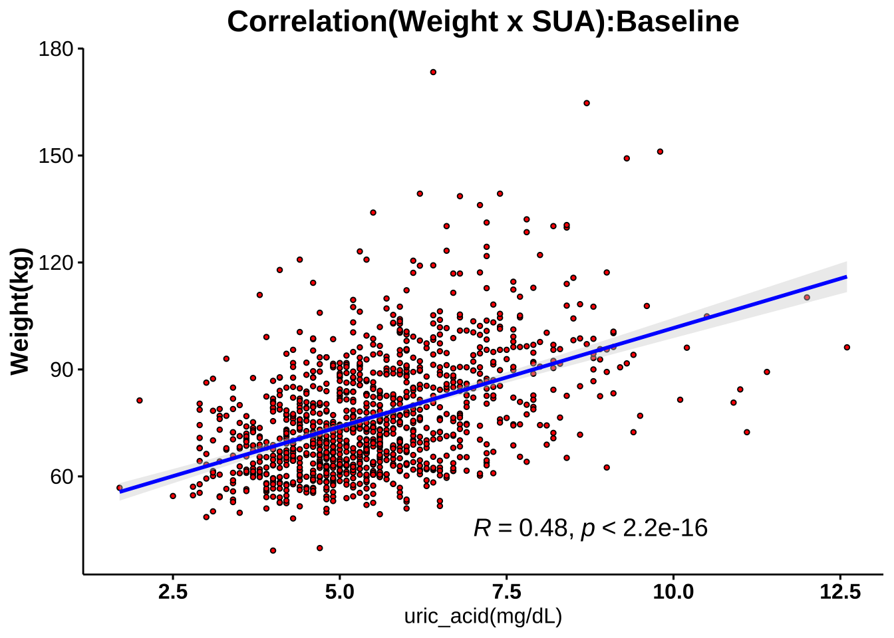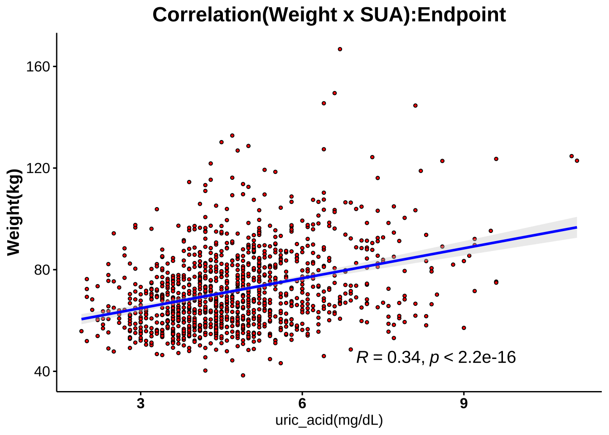
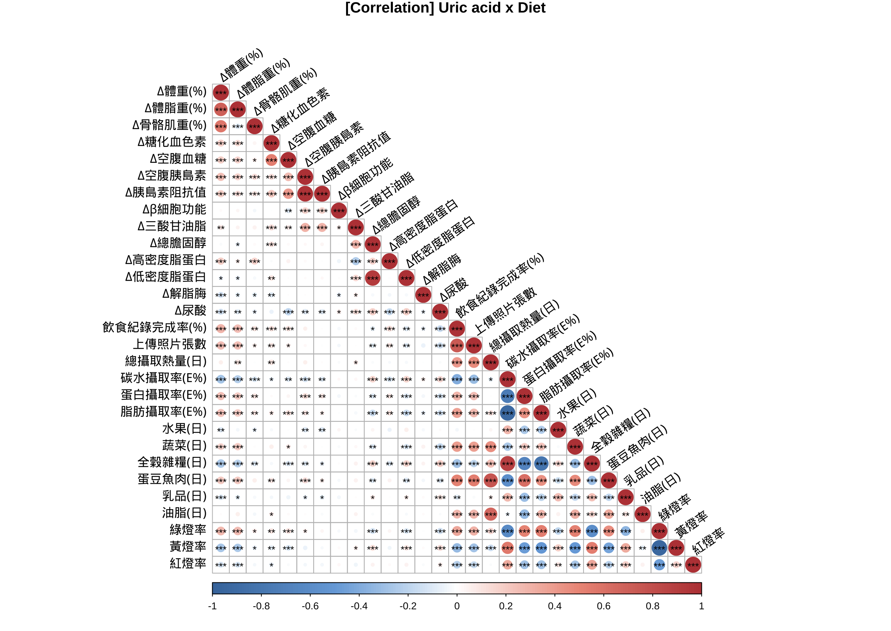
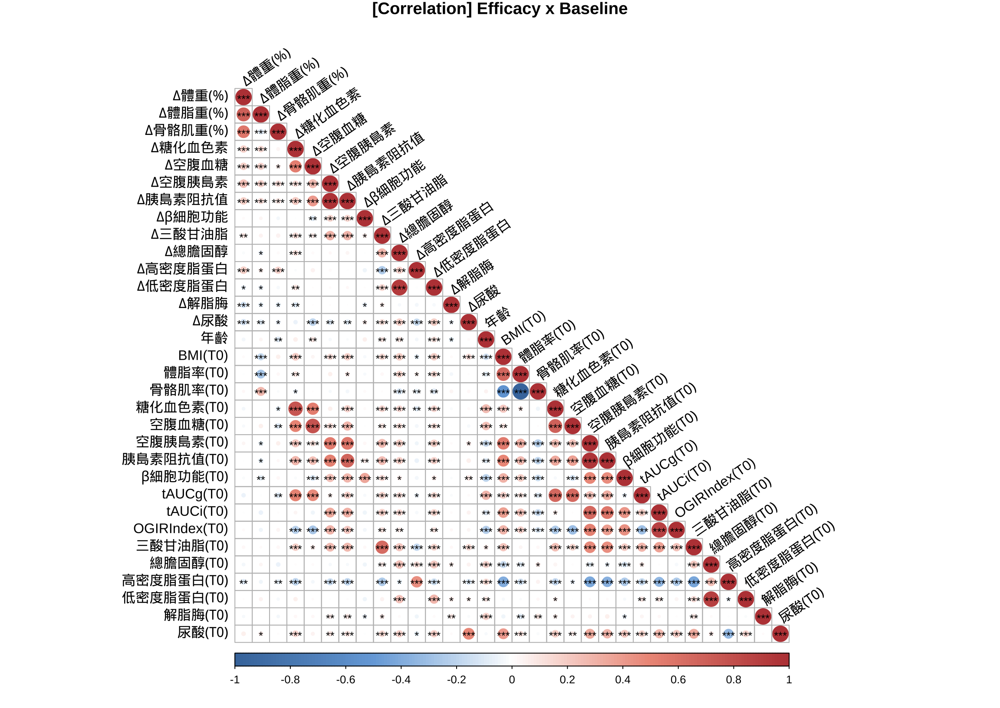
| No change | Decrease | Increase | Normal>High | High>Normal | High>High | Sum | |
|---|---|---|---|---|---|---|---|
| female | 102 | 549 | 139 | 31 | 89 | 29 | 939 |
| male | 16 | 81 | 18 | 6 | 44 | 20 | 185 |
| Sum | 118 | 630 | 157 | 37 | 133 | 49 | 1124 |
|
Cutoffs: Male: 7.6 (mg/dL) Female: 6.6(mg/dL) |
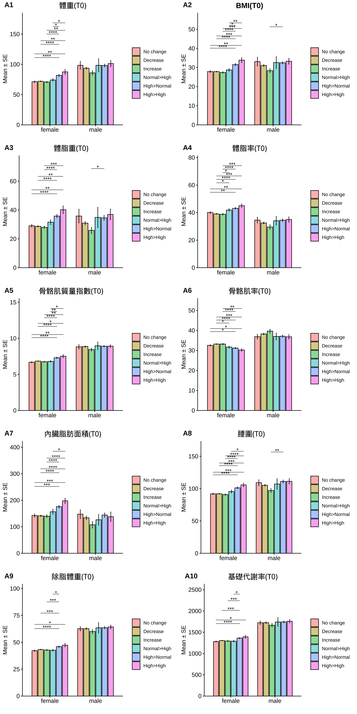
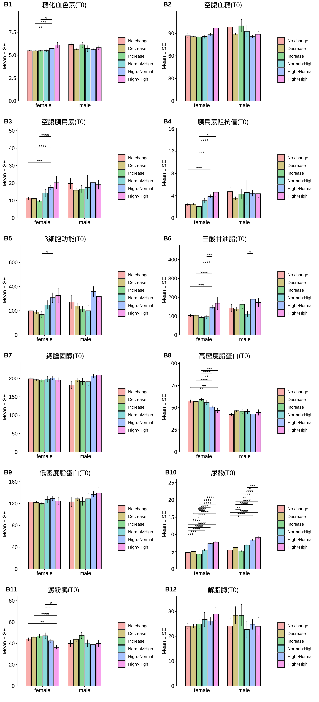
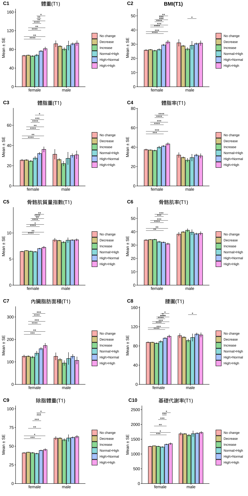
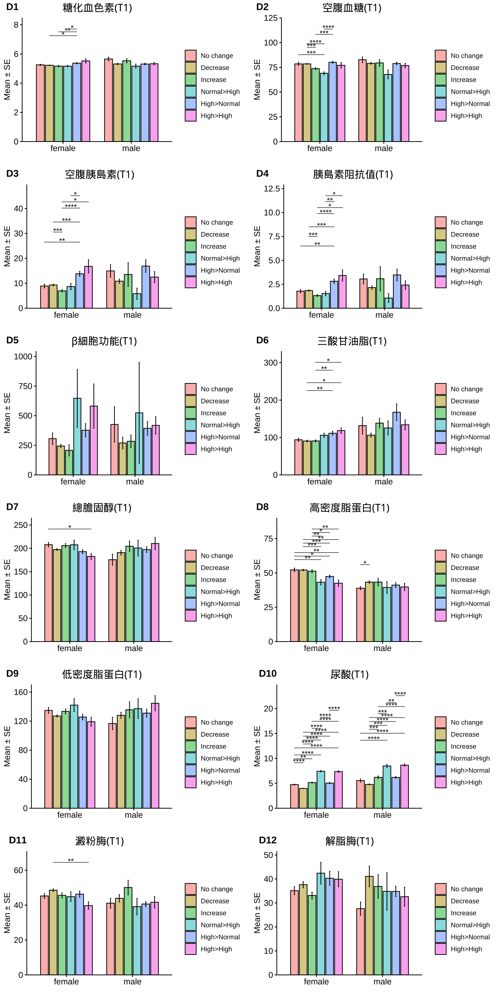
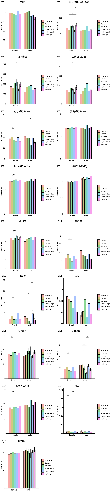
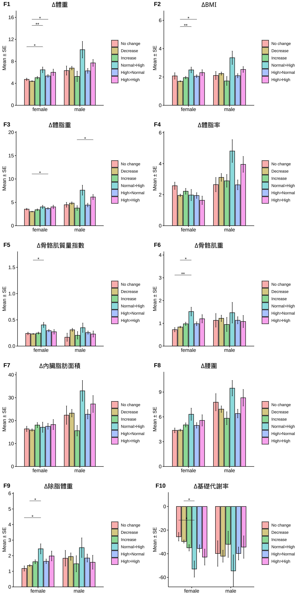
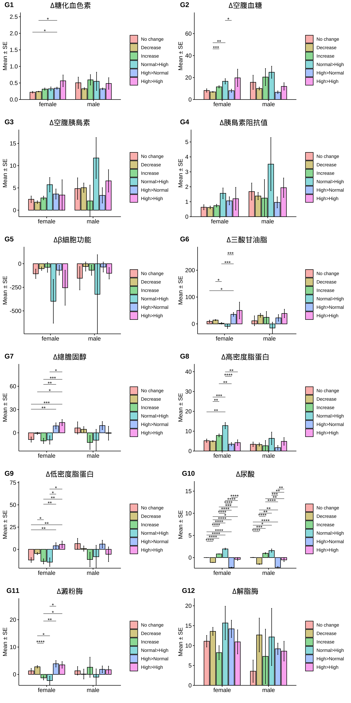
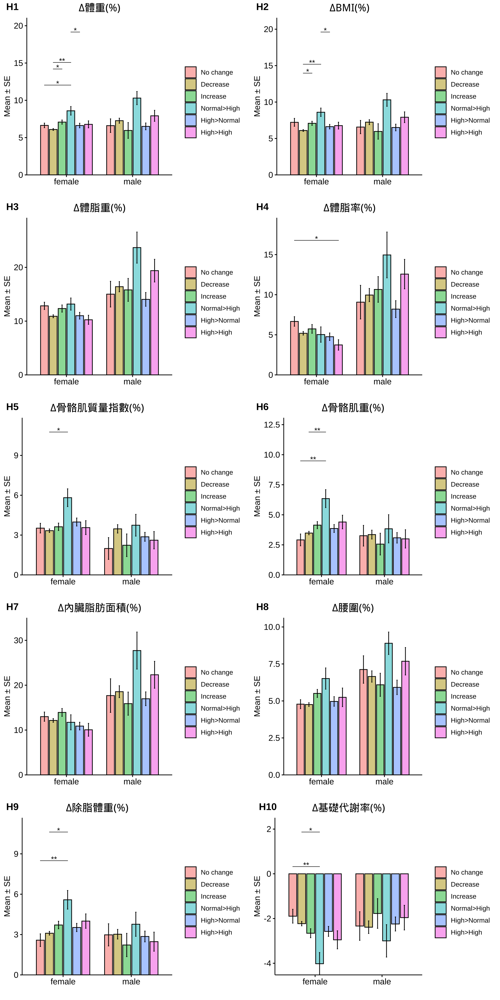
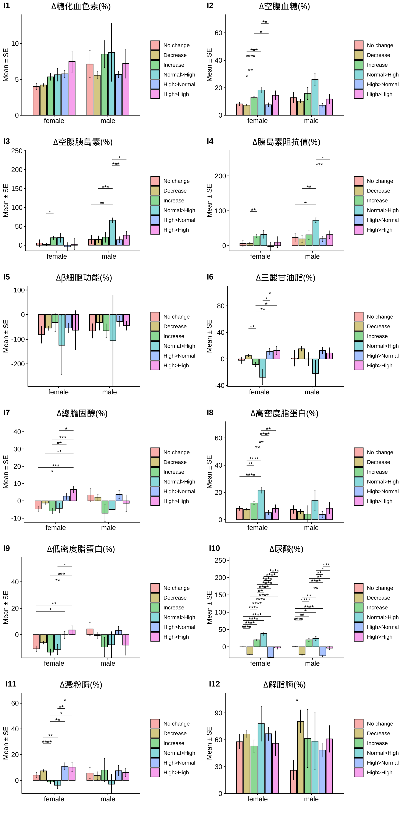
| No change | Decrease | Increase | Normal>High | High>Normal | High>High | No change | Decrease | Increase | Normal>High | High>Normal | High>High | |
|---|---|---|---|---|---|---|---|---|---|---|---|---|
| 體重(T0) | 71.27 ± 1.25 | 71.99 ± 0.56 | 70.8 ± 1.11 | 74.18 ± 2.23 | 81.76 ± 1.46 | 87.51 ± 3.84 | 98.45 ± 6.38 | 93.62 ± 1.59 | 85.89 ± 3.35 | 98.37 ± 10.79 | 98.09 ± 2.32 | 101.22 ± 4.96 |
| BMI(T0) | 27.87 ± 0.46 | 27.84 ± 0.2 | 27.41 ± 0.38 | 28.71 ± 0.66 | 31.51 ± 0.53 | 33.83 ± 1.28 | 33.08 ± 2.3 | 31.05 ± 0.47 | 28.35 ± 0.96 | 32.58 ± 3.1 | 32.44 ± 0.59 | 33.28 ± 1.55 |
| 體脂重(T0) | 29.05 ± 0.86 | 28.68 ± 0.4 | 28 ± 0.75 | 31.57 ± 1.59 | 35.79 ± 1.04 | 40.19 ± 2.59 | 35.81 ± 4.71 | 30.9 ± 1.04 | 25.89 ± 2.15 | 34.88 ± 6.92 | 34.53 ± 1.68 | 36.94 ± 3.75 |
| 體脂率(T0) | 40.05 ± 0.61 | 39.06 ± 0.26 | 38.79 ± 0.54 | 41.89 ± 0.91 | 43.13 ± 0.58 | 45.01 ± 1.15 | 34.56 ± 2.09 | 32.48 ± 0.62 | 29.55 ± 1.59 | 34.08 ± 3.12 | 34.48 ± 0.94 | 34.99 ± 1.88 |
| 骨骼肌質量指數(T0) | 6.69 ± 0.07 | 6.84 ± 0.03 | 6.75 ± 0.07 | 6.8 ± 0.1 | 7.3 ± 0.08 | 7.52 ± 0.2 | 8.82 ± 0.29 | 8.86 ± 0.08 | 8.44 ± 0.19 | 8.97 ± 0.51 | 8.9 ± 0.09 | 8.91 ± 0.18 |
| 骨骼肌率(T0) | 32.53 ± 0.32 | 33.19 ± 0.14 | 33.19 ± 0.29 | 31.67 ± 0.48 | 31.17 ± 0.31 | 30.21 ± 0.63 | 36.87 ± 1.15 | 38.23 ± 0.36 | 39.64 ± 0.93 | 36.99 ± 1.68 | 37.08 ± 0.54 | 36.8 ± 1.05 |
| 內臟脂肪面積(T0) | 142.4 ± 4.89 | 141.32 ± 1.92 | 139.95 ± 3.9 | 156.67 ± 7.92 | 175.87 ± 4.28 | 197.83 ± 8.29 | 147.48 ± 14.52 | 133.92 ± 5.35 | 107.55 ± 9.97 | 126.38 ± 18.36 | 144.18 ± 7.06 | 137.98 ± 13.76 |
| 腰圍(T0) | 91.94 ± 1.1 | 92.06 ± 0.49 | 90.75 ± 0.94 | 95.49 ± 2.21 | 101.22 ± 1.19 | 105.71 ± 2.66 | 109.17 ± 4.43 | 105.18 ± 1.29 | 97.15 ± 2.82 | 107.15 ± 7.97 | 111.06 ± 2.22 | 111.31 ± 4.1 |
| 除脂體重(T0) | 42.22 ± 0.55 | 43.31 ± 0.23 | 42.8 ± 0.5 | 42.62 ± 0.77 | 45.96 ± 0.57 | 47.32 ± 1.51 | 62.64 ± 1.95 | 62.72 ± 0.8 | 60.01 ± 1.81 | 63.48 ± 4.74 | 63.56 ± 0.96 | 64.28 ± 1.69 |
| 基礎代謝率(T0) | 1282.19 ± 11.81 | 1305.55 ± 4.91 | 1294.46 ± 10.78 | 1290.61 ± 16.66 | 1362.81 ± 12.36 | 1392 ± 32.71 | 1723.25 ± 42.19 | 1724.77 ± 17.34 | 1666.06 ± 39.06 | 1741.33 ± 102.36 | 1742.7 ± 20.85 | 1758.5 ± 36.51 |
| 糖化血色素(T0) | 5.48 ± 0.03 | 5.47 ± 0.02 | 5.48 ± 0.05 | 5.49 ± 0.08 | 5.71 ± 0.05 | 6.09 ± 0.3 | 6.16 ± 0.27 | 5.64 ± 0.05 | 6.13 ± 0.27 | 5.72 ± 0.3 | 5.63 ± 0.05 | 5.82 ± 0.2 |
| 空腹血糖(T0) | 86.73 ± 2.64 | 85.45 ± 0.43 | 85.24 ± 1.31 | 85.61 ± 2.12 | 88.12 ± 1.5 | 96.83 ± 7.96 | 98.44 ± 7.52 | 89.09 ± 1.2 | 99.94 ± 8.42 | 92.67 ± 7.31 | 85.52 ± 1.45 | 88.75 ± 3.42 |
| 空腹胰島素(T0) | 11.36 ± 0.71 | 11.1 ± 0.33 | 9.71 ± 0.47 | 14.41 ± 1.97 | 17.45 ± 1.25 | 20.18 ± 3.57 | 19.83 ± 3.14 | 15.91 ± 1.14 | 16.55 ± 2.15 | 17.55 ± 6.77 | 20.24 ± 1.99 | 19.08 ± 2.55 |
| 胰島素阻抗值(T0) | 2.4 ± 0.17 | 2.47 ± 0.1 | 2.06 ± 0.1 | 3.1 ± 0.44 | 3.88 ± 0.29 | 4.63 ± 0.78 | 4.74 ± 0.72 | 3.55 ± 0.26 | 4.33 ± 0.9 | 4.58 ± 2.23 | 4.44 ± 0.52 | 4.36 ± 0.66 |
| β細胞功能(T0) | 199.86 ± 15.07 | 191.05 ± 12.45 | 168.56 ± 25.01 | 248.65 ± 34.61 | 308.56 ± 39.66 | 326.63 ± 56.24 | 272.12 ± 56.35 | 239.68 ± 23.86 | 214.99 ± 25.74 | 200.13 ± 42.15 | 358.52 ± 41.28 | 317.36 ± 39.45 |
| 三酸甘油脂(T0) | 103.14 ± 4.72 | 104.7 ± 2.4 | 93.01 ± 3.86 | 96.81 ± 8.4 | 146.89 ± 8.48 | 168.48 ± 32.81 | 143.31 ± 17.75 | 138.11 ± 9.49 | 162.78 ± 21.77 | 110.17 ± 15.28 | 189.89 ± 17.12 | 172.8 ± 23.15 |
| 總膽固醇(T0) | 199.15 ± 3.59 | 196.54 ± 1.58 | 195.48 ± 3.12 | 198.35 ± 7.27 | 201.76 ± 4.88 | 195.9 ± 5.93 | 181.88 ± 9.35 | 195.35 ± 3.82 | 192 ± 8.09 | 191.17 ± 9.98 | 206.59 ± 5.51 | 209.8 ± 11.93 |
| 高密度脂蛋白(T0) | 57.43 ± 1.38 | 57.07 ± 0.56 | 59.15 ± 1.18 | 56.01 ± 2.59 | 50.89 ± 1.16 | 46.74 ± 2.22 | 42.27 ± 1.18 | 46.56 ± 0.83 | 45.97 ± 2.32 | 45.8 ± 2.7 | 42.82 ± 1.49 | 44.6 ± 3.1 |
| 低密度脂蛋白(T0) | 122.75 ± 3.08 | 122.27 ± 1.38 | 119.86 ± 2.63 | 127.65 ± 6.31 | 129.61 ± 4.23 | 124.76 ± 6.25 | 123.19 ± 8.55 | 128.81 ± 3.29 | 124.17 ± 7.3 | 128.83 ± 9.25 | 136.95 ± 5.04 | 139.05 ± 10.46 |
| 尿酸(T0) | 4.74 ± 0.09 | 5.09 ± 0.04 | 4.32 ± 0.07 | 5.47 ± 0.12 | 7.32 ± 0.09 | 7.76 ± 0.2 | 5.54 ± 0.32 | 6.25 ± 0.1 | 5.24 ± 0.25 | 6.9 ± 0.3 | 8.41 ± 0.1 | 9.18 ± 0.29 |
| 澱粉脢(T0) | 43.98 ± 1.22 | 45.79 ± 0.64 | 46.88 ± 1.54 | 47.13 ± 2.73 | 42.43 ± 1.51 | 36.28 ± 1.67 | 39.81 ± 3 | 43.8 ± 2.19 | 47.5 ± 2.87 | 40.17 ± 3.16 | 38.82 ± 1.45 | 39.95 ± 3.24 |
| 解脂脢(T0) | 24.01 ± 1.01 | 24.1 ± 0.61 | 24.89 ± 1.68 | 26.74 ± 2.76 | 26.09 ± 1.66 | 28.97 ± 2.61 | 24.06 ± 3.04 | 28.41 ± 3.44 | 28.39 ± 4.35 | 22.67 ± 3.31 | 24.81 ± 2 | 24 ± 3.51 |
| 體重(T1) | 66.55 ± 1.21 | 67.61 ± 0.53 | 65.77 ± 1.05 | 67.73 ± 2 | 76.41 ± 1.44 | 81.51 ± 3.51 | 92.13 ± 6.34 | 86.85 ± 1.54 | 80.63 ± 3.08 | 88.25 ± 9.61 | 91.82 ± 2.34 | 93.5 ± 5.01 |
| BMI(T1) | 25.79 ± 0.42 | 26.15 ± 0.19 | 25.45 ± 0.35 | 26.21 ± 0.58 | 29.46 ± 0.53 | 31.52 ± 1.18 | 30.97 ± 2.28 | 28.81 ± 0.46 | 26.63 ± 0.91 | 29.22 ± 2.75 | 30.35 ± 0.61 | 30.75 ± 1.58 |
| 體脂重(T1) | 25.51 ± 0.84 | 25.67 ± 0.38 | 24.59 ± 0.71 | 27.55 ± 1.52 | 32.09 ± 1.05 | 36.17 ± 2.42 | 31.33 ± 4.69 | 26.07 ± 1.01 | 22.11 ± 2.17 | 27.28 ± 5.97 | 30.11 ± 1.75 | 30.8 ± 3.8 |
| 體脂率(T1) | 37.47 ± 0.65 | 37.1 ± 0.28 | 36.57 ± 0.56 | 39.91 ± 1.1 | 41.18 ± 0.66 | 43.37 ± 1.2 | 31.91 ± 2.39 | 29.36 ± 0.68 | 26.66 ± 1.79 | 29.27 ± 3.4 | 31.84 ± 1.07 | 31.04 ± 2.16 |
| 骨骼肌質量指數(T1) | 6.45 ± 0.07 | 6.61 ± 0.03 | 6.5 ± 0.06 | 6.4 ± 0.09 | 7.01 ± 0.08 | 7.25 ± 0.19 | 8.66 ± 0.32 | 8.55 ± 0.08 | 8.23 ± 0.15 | 8.62 ± 0.45 | 8.65 ± 0.09 | 8.69 ± 0.19 |
| 骨骼肌率(T1) | 33.8 ± 0.34 | 34.12 ± 0.15 | 34.24 ± 0.3 | 32.48 ± 0.58 | 32.12 ± 0.35 | 30.98 ± 0.64 | 38.26 ± 1.33 | 39.85 ± 0.39 | 41.14 ± 1.06 | 39.67 ± 1.84 | 38.47 ± 0.61 | 38.82 ± 1.2 |
| 內臟脂肪面積(T1) | 125.03 ± 4.78 | 125.29 ± 1.92 | 121.5 ± 3.78 | 138.75 ± 7.85 | 158.59 ± 4.65 | 172.59 ± 9.5 | 124.75 ± 14.02 | 110.18 ± 5.07 | 94.99 ± 9.29 | 115.27 ± 26.12 | 124.72 ± 7.53 | 106.66 ± 13.01 |
| 腰圍(T1) | 87.57 ± 1.12 | 87.67 ± 0.48 | 85.72 ± 0.91 | 89.18 ± 2.04 | 96.25 ± 1.23 | 100.14 ± 2.58 | 101.4 ± 4.26 | 98.25 ± 1.33 | 91.32 ± 2.98 | 97.68 ± 7.46 | 104.65 ± 2.37 | 103 ± 4.32 |
| 除脂體重(T1) | 41.04 ± 0.51 | 41.94 ± 0.22 | 41.18 ± 0.48 | 40.17 ± 0.67 | 44.32 ± 0.55 | 45.33 ± 1.33 | 60.8 ± 2.05 | 60.78 ± 0.76 | 58.52 ± 1.58 | 60.97 ± 4.34 | 61.71 ± 0.91 | 62.7 ± 1.72 |
| 基礎代謝率(T1) | 1256.57 ± 10.94 | 1275.91 ± 4.7 | 1259.5 ± 10.31 | 1237.68 ± 14.48 | 1327.28 ± 11.84 | 1349.17 ± 28.75 | 1683.44 ± 44.22 | 1682.7 ± 16.47 | 1634.06 ± 34.07 | 1686.83 ± 93.69 | 1702.93 ± 19.69 | 1724.15 ± 37.23 |
| 糖化血色素(T1) | 5.26 ± 0.04 | 5.23 ± 0.01 | 5.17 ± 0.03 | 5.16 ± 0.05 | 5.37 ± 0.04 | 5.52 ± 0.14 | 5.66 ± 0.12 | 5.32 ± 0.04 | 5.53 ± 0.14 | 5.17 ± 0.14 | 5.31 ± 0.05 | 5.33 ± 0.08 |
| 空腹血糖(T1) | 78.49 ± 1.63 | 78.52 ± 0.34 | 73.69 ± 1.06 | 69.03 ± 1.39 | 80.11 ± 0.96 | 77.1 ± 2.8 | 82.75 ± 2.87 | 79.06 ± 0.88 | 79.5 ± 3.37 | 67.83 ± 4.41 | 78.89 ± 1.28 | 76.8 ± 2.29 |
| 空腹胰島素(T1) | 8.91 ± 0.72 | 9.32 ± 0.3 | 6.96 ± 0.46 | 8.68 ± 1.26 | 13.82 ± 0.99 | 16.78 ± 2.66 | 14.97 ± 2.5 | 10.86 ± 0.84 | 13.54 ± 4.65 | 5.83 ± 2.24 | 16.91 ± 2.51 | 12.49 ± 2.24 |
| 胰島素阻抗值(T1) | 1.78 ± 0.16 | 1.85 ± 0.06 | 1.32 ± 0.1 | 1.54 ± 0.24 | 2.82 ± 0.22 | 3.42 ± 0.59 | 3.06 ± 0.51 | 2.16 ± 0.17 | 3.08 ± 1.28 | 1.07 ± 0.47 | 3.48 ± 0.61 | 2.42 ± 0.45 |
| β細胞功能(T1) | 305.88 ± 48.21 | 243.87 ± 14.43 | 207.64 ± 47 | 646.77 ± 243.55 | 377.3 ± 56.91 | 581.22 ± 186.72 | 426.12 ± 149.32 | 269.54 ± 49.08 | 283.97 ± 53.14 | 524.22 ± 426.21 | 393.64 ± 58.04 | 418.65 ± 73.36 |
| 三酸甘油脂(T1) | 93.82 ± 4.11 | 90.48 ± 2.23 | 90.82 ± 2.6 | 105.97 ± 5.37 | 111.34 ± 5.3 | 118.48 ± 7.28 | 131.75 ± 22.36 | 106.15 ± 5.34 | 138.33 ± 12.77 | 125.5 ± 18.76 | 167.45 ± 22.04 | 133.95 ± 13.26 |
| 總膽固醇(T1) | 207.84 ± 4.74 | 197.31 ± 1.75 | 205.85 ± 4.24 | 207.55 ± 10.12 | 192.81 ± 4.3 | 182.66 ± 6.42 | 175.62 ± 11.82 | 190.85 ± 4.96 | 204.44 ± 11.5 | 200.67 ± 16.85 | 197.27 ± 6.14 | 210.35 ± 12.96 |
| 高密度脂蛋白(T1) | 52.22 ± 1.32 | 52.11 ± 0.51 | 51.27 ± 1.02 | 43.19 ± 1.9 | 47.41 ± 0.96 | 42.51 ± 2.26 | 38.86 ± 1.09 | 43.29 ± 0.85 | 43.31 ± 2.68 | 39.42 ± 4.29 | 41.12 ± 1.77 | 39.74 ± 2.6 |
| 低密度脂蛋白(T1) | 134.75 ± 3.93 | 127.05 ± 1.5 | 133.37 ± 3.39 | 142.03 ± 8.93 | 125.61 ± 3.79 | 119.17 ± 6.19 | 116.75 ± 8.58 | 127.96 ± 4.04 | 135.61 ± 11.03 | 137.17 ± 13.53 | 131.05 ± 5.45 | 144.6 ± 10.43 |
| 尿酸(T1) | 4.74 ± 0.09 | 3.99 ± 0.03 | 5.14 ± 0.07 | 7.42 ± 0.13 | 5.05 ± 0.1 | 7.36 ± 0.14 | 5.56 ± 0.33 | 4.78 ± 0.09 | 6.21 ± 0.26 | 8.48 ± 0.32 | 6.19 ± 0.16 | 8.65 ± 0.22 |
| 澱粉脢(T1) | 45.26 ± 1.37 | 48.57 ± 0.73 | 45.6 ± 1.42 | 44.87 ± 2.73 | 46.31 ± 1.77 | 39.76 ± 2.11 | 41.12 ± 2.81 | 43.93 ± 2.15 | 50.11 ± 4.15 | 39.17 ± 4.69 | 40.66 ± 1.45 | 41.65 ± 3.29 |
| 解脂脢(T1) | 35.11 ± 1.69 | 37.62 ± 1.31 | 33.12 ± 1.43 | 42.42 ± 4.51 | 40.29 ± 2.91 | 39.9 ± 3.16 | 27.62 ± 2.75 | 41.07 ± 4.32 | 36.88 ± 4.78 | 34.83 ± 7.84 | 34.8 ± 2.16 | 32.6 ± 3.96 |
| 年齡 | 39.67 ± 1.18 | 39.06 ± 0.42 | 38.57 ± 0.75 | 37.13 ± 1.9 | 41.71 ± 1.39 | 38.66 ± 1.96 | 39.56 ± 3.19 | 40.27 ± 1.23 | 41.83 ± 2.87 | 35.67 ± 3.04 | 37.45 ± 1.66 | 34.7 ± 2.39 |
| 飲食紀錄完成率(%) | 67.91 ± 2.91 | 61.25 ± 1.27 | 73.87 ± 2.19 | 73 ± 4.48 | 59.18 ± 3.25 | 77.86 ± 4.76 | 59.54 ± 9.03 | 62.48 ± 3.17 | 61.5 ± 8.12 | 75.15 ± 10.3 | 59.1 ± 5.06 | 62.85 ± 6.47 |
| 紀錄數量 | 174.98 ± 13.1 | 158.52 ± 5.29 | 208.42 ± 14.68 | 217.68 ± 35.87 | 142.33 ± 12.15 | 197.34 ± 22.13 | 122 ± 30.48 | 166.98 ± 15.6 | 181.5 ± 46.18 | 185.33 ± 67.56 | 137.32 ± 26.79 | 155.8 ± 39.65 |
| 上傳照片張數 | 150.85 ± 9.96 | 132.46 ± 4.3 | 171.8 ± 9.1 | 155.71 ± 15.52 | 119.76 ± 10.34 | 177.45 ± 21.8 | 106.62 ± 18.26 | 142.02 ± 13 | 167.78 ± 32.06 | 219.83 ± 68.96 | 139.43 ± 19.39 | 154.85 ± 38.68 |
| 碳水攝取率(E%) | 18.41 ± 0.67 | 19.93 ± 0.29 | 16.83 ± 0.46 | 15.72 ± 0.94 | 19.39 ± 0.72 | 15.92 ± 1.21 | 20.43 ± 2.55 | 18.84 ± 0.75 | 19.04 ± 1.84 | 12.95 ± 1.7 | 19.08 ± 1.08 | 14.92 ± 1 |
| 蛋白攝取率(E%) | 27.77 ± 0.27 | 27.13 ± 0.13 | 27.86 ± 0.22 | 28.12 ± 0.39 | 27.04 ± 0.28 | 28.23 ± 0.59 | 27.28 ± 0.94 | 27.58 ± 0.32 | 26.91 ± 0.69 | 30.23 ± 0.66 | 27.43 ± 0.44 | 28.48 ± 0.66 |
| 脂肪攝取率(E%) | 53.81 ± 0.5 | 52.95 ± 0.22 | 55.32 ± 0.35 | 56.16 ± 0.78 | 53.57 ± 0.54 | 55.86 ± 0.88 | 52.29 ± 1.82 | 53.58 ± 0.56 | 54.06 ± 1.24 | 56.82 ± 1.84 | 53.49 ± 0.79 | 56.61 ± 0.72 |
| 總攝取熱量(日) | 994.29 ± 16.21 | 983.89 ± 6.67 | 1002.06 ± 13.44 | 978.03 ± 24.66 | 1005.92 ± 19.32 | 1005.77 ± 26.2 | 1116.73 ± 58.12 | 1117.15 ± 21.73 | 1060.68 ± 45.75 | 1127.4 ± 139.36 | 1090.11 ± 36.71 | 1162.54 ± 38.3 |
| 綠燈率 | 84.81 ± 1.4 | 79.97 ± 0.69 | 85.45 ± 1.26 | 89.59 ± 1.63 | 80.67 ± 1.59 | 86.62 ± 2.87 | 75.1 ± 6.26 | 81.69 ± 1.75 | 83.47 ± 3.83 | 87.62 ± 2.58 | 78.17 ± 3.14 | 86.62 ± 2.71 |
| 黃燈率 | 13.35 ± 1.22 | 17.31 ± 0.63 | 13 ± 1.13 | 8.78 ± 1.34 | 15.3 ± 1.35 | 11.79 ± 2.62 | 22.24 ± 5.41 | 16.37 ± 1.55 | 15.42 ± 3.59 | 12.35 ± 2.6 | 18.12 ± 2.76 | 12.06 ± 2.51 |
| 紅燈率 | 1.84 ± 0.36 | 2.72 ± 0.23 | 1.55 ± 0.28 | 1.63 ± 0.57 | 4.04 ± 0.89 | 1.59 ± 0.48 | 2.66 ± 1.29 | 1.94 ± 0.5 | 1.11 ± 0.43 | 0.03 ± 0.03 | 3.7 ± 1.16 | 1.31 ± 0.6 |
| 水果(日) | 0.1 ± 0.02 | 0.09 ± 0.01 | 0.08 ± 0.01 | 0.06 ± 0.02 | 0.1 ± 0.02 | 0.04 ± 0.02 | 0.03 ± 0.01 | 0.04 ± 0.01 | 0.09 ± 0.06 | 0.02 ± 0.01 | 0.07 ± 0.02 | 0.03 ± 0.01 |
| 蔬菜(日) | 3.43 ± 0.11 | 3.2 ± 0.05 | 3.65 ± 0.09 | 3.62 ± 0.18 | 3.27 ± 0.12 | 3.5 ± 0.16 | 3.15 ± 0.32 | 3.25 ± 0.14 | 3.84 ± 0.36 | 3.86 ± 0.59 | 3.09 ± 0.17 | 3.68 ± 0.24 |
| 全穀雜糧(日) | 1.74 ± 0.11 | 2.05 ± 0.05 | 1.46 ± 0.08 | 1.25 ± 0.14 | 2.01 ± 0.14 | 1.38 ± 0.18 | 2.47 ± 0.38 | 2.37 ± 0.16 | 1.95 ± 0.32 | 0.99 ± 0.12 | 2.3 ± 0.23 | 1.64 ± 0.26 |
| 蛋豆魚肉(日) | 8.81 ± 0.18 | 8.38 ± 0.08 | 9 ± 0.16 | 8.89 ± 0.27 | 8.58 ± 0.2 | 9.25 ± 0.39 | 9.79 ± 0.85 | 9.8 ± 0.24 | 9.04 ± 0.56 | 11.34 ± 1.56 | 9.56 ± 0.41 | 10.71 ± 0.37 |
| 乳品(日) | 0.05 ± 0.01 | 0.08 ± 0.01 | 0.05 ± 0.01 | 0.03 ± 0.01 | 0.07 ± 0.01 | 0.03 ± 0.01 | 0.07 ± 0.03 | 0.05 ± 0.01 | 0.05 ± 0.02 | 0.04 ± 0.01 | 0.06 ± 0.01 | 0.04 ± 0.01 |
| 油脂(日) | 3.75 ± 0.11 | 3.84 ± 0.04 | 4 ± 0.07 | 3.84 ± 0.13 | 3.91 ± 0.11 | 3.92 ± 0.17 | 4.12 ± 0.32 | 4.27 ± 0.12 | 4.12 ± 0.25 | 3.87 ± 0.51 | 4.05 ± 0.17 | 4.28 ± 0.27 |
| ∆體重 | 4.72 ± 0.22 | 4.38 ± 0.09 | 5.02 ± 0.22 | 6.46 ± 0.51 | 5.34 ± 0.26 | 6 ± 0.57 | 6.32 ± 0.83 | 6.77 ± 0.32 | 5.26 ± 0.94 | 10.12 ± 1.5 | 6.27 ± 0.44 | 7.71 ± 0.62 |
| ∆BMI | 2.07 ± 0.22 | 1.7 ± 0.04 | 1.95 ± 0.08 | 2.5 ± 0.2 | 2.06 ± 0.1 | 2.31 ± 0.2 | 2.11 ± 0.28 | 2.24 ± 0.11 | 1.72 ± 0.31 | 3.36 ± 0.47 | 2.09 ± 0.14 | 2.53 ± 0.2 |
| ∆體脂重 | 3.54 ± 0.18 | 3.01 ± 0.07 | 3.41 ± 0.18 | 4.02 ± 0.34 | 3.7 ± 0.2 | 4.02 ± 0.37 | 4.48 ± 0.52 | 4.83 ± 0.26 | 3.78 ± 0.51 | 7.6 ± 1.06 | 4.42 ± 0.38 | 6.14 ± 0.54 |
| ∆體脂率 | 2.58 ± 0.23 | 1.96 ± 0.08 | 2.22 ± 0.18 | 1.98 ± 0.36 | 1.94 ± 0.18 | 1.64 ± 0.27 | 2.65 ± 0.46 | 3.12 ± 0.25 | 2.89 ± 0.41 | 4.82 ± 0.73 | 2.64 ± 0.32 | 3.96 ± 0.51 |
| ∆骨骼肌質量指數 | 0.24 ± 0.02 | 0.23 ± 0.01 | 0.25 ± 0.02 | 0.4 ± 0.05 | 0.29 ± 0.02 | 0.27 ± 0.04 | 0.17 ± 0.08 | 0.31 ± 0.03 | 0.21 ± 0.07 | 0.35 ± 0.09 | 0.26 ± 0.03 | 0.23 ± 0.06 |
| ∆骨骼肌重 | 0.72 ± 0.09 | 0.84 ± 0.03 | 0.98 ± 0.07 | 1.52 ± 0.19 | 0.98 ± 0.09 | 1.2 ± 0.18 | 1.13 ± 0.29 | 1.22 ± 0.14 | 0.95 ± 0.31 | 1.47 ± 0.45 | 1.13 ± 0.15 | 1.08 ± 0.26 |
| ∆內臟脂肪面積 | 16.41 ± 0.92 | 15.91 ± 0.41 | 18.06 ± 0.89 | 17.12 ± 1.9 | 17.53 ± 1.13 | 18.29 ± 1.96 | 22.39 ± 3.46 | 23.27 ± 1.37 | 15.63 ± 1.88 | 33 ± 4.12 | 22.79 ± 1.8 | 27.27 ± 2.84 |
| ∆腰圍 | 4.37 ± 0.29 | 4.39 ± 0.12 | 5.03 ± 0.25 | 6.32 ± 0.73 | 4.97 ± 0.33 | 5.57 ± 0.68 | 7.77 ± 1.03 | 6.93 ± 0.39 | 5.83 ± 0.78 | 9.47 ± 0.93 | 6.4 ± 0.52 | 8.31 ± 1 |
| ∆除脂體重 | 1.18 ± 0.17 | 1.37 ± 0.06 | 1.61 ± 0.12 | 2.44 ± 0.32 | 1.64 ± 0.14 | 1.98 ± 0.31 | 1.84 ± 0.5 | 1.94 ± 0.23 | 1.48 ± 0.51 | 2.52 ± 0.63 | 1.85 ± 0.25 | 1.58 ± 0.44 |
| ∆基礎代謝率 | -25.62 ± 3.58 | -29.64 ± 1.3 | -34.96 ± 2.68 | -52.94 ± 6.85 | -35.53 ± 3.12 | -42.83 ± 6.75 | -39.81 ± 10.8 | -42.06 ± 5.07 | -32 ± 11.06 | -54.5 ± 13.56 | -39.77 ± 5.46 | -34.35 ± 9.49 |
| ∆糖化血色素 | 0.22 ± 0.02 | 0.24 ± 0.01 | 0.31 ± 0.03 | 0.32 ± 0.06 | 0.34 ± 0.03 | 0.57 ± 0.18 | 0.51 ± 0.17 | 0.33 ± 0.03 | 0.59 ± 0.16 | 0.55 ± 0.28 | 0.32 ± 0.03 | 0.48 ± 0.17 |
| ∆空腹血糖 | 8.24 ± 1.54 | 6.93 ± 0.42 | 11.55 ± 1.03 | 16.58 ± 2.41 | 8.01 ± 1.42 | 19.72 ± 7.88 | 15.69 ± 6.44 | 10.02 ± 1.3 | 20.44 ± 7.78 | 24.83 ± 5.46 | 6.64 ± 1.18 | 11.95 ± 3.33 |
| ∆空腹胰島素 | 2.44 ± 0.72 | 1.8 ± 0.3 | 2.75 ± 0.41 | 5.73 ± 1.61 | 3.63 ± 1.13 | 3.4 ± 3.42 | 4.85 ± 2.41 | 5.05 ± 1.05 | 2.08 ± 3.45 | 11.72 ± 4.59 | 3.33 ± 1.73 | 6.59 ± 2.51 |
| ∆胰島素阻抗值 | 0.63 ± 0.16 | 0.62 ± 0.09 | 0.74 ± 0.09 | 1.56 ± 0.36 | 1.06 ± 0.27 | 1.2 ± 0.76 | 1.68 ± 0.57 | 1.38 ± 0.24 | 1.24 ± 1.24 | 3.52 ± 1.78 | 0.96 ± 0.37 | 1.94 ± 0.65 |
| ∆β細胞功能 | -106.84 ± 48.87 | -52.61 ± 18.43 | -37.9 ± 51.91 | -398.11 ± 232.06 | -68.75 ± 51.78 | -254.59 ± 185.49 | -154 ± 123.56 | -29.86 ± 48.32 | -68.98 ± 53.32 | -324.08 ± 419.32 | -35.12 ± 52.88 | -101.3 ± 60.5 |
| ∆三酸甘油脂 | 9.31 ± 4.66 | 14.21 ± 2.01 | 2.19 ± 2.98 | -9.16 ± 7.84 | 35.55 ± 7.18 | 50 ± 31.09 | 11.56 ± 18.41 | 31.96 ± 7.17 | 24.44 ± 21.76 | -15.33 ± 21.81 | 22.43 ± 12.26 | 38.85 ± 15.66 |
| ∆總膽固醇 | -8.7 ± 3.3 | -0.76 ± 1.34 | -10.37 ± 3.3 | -9.19 ± 5.38 | 8.96 ± 3.87 | 13.24 ± 3.91 | 6.25 ± 7.87 | 4.49 ± 3.44 | -12.44 ± 8.92 | -9.5 ± 13.97 | 9.32 ± 5.15 | -0.55 ± 8.92 |
| ∆高密度脂蛋白 | 5.21 ± 0.84 | 4.96 ± 0.36 | 7.87 ± 0.74 | 12.82 ± 1.55 | 3.47 ± 0.83 | 4.23 ± 1.42 | 3.41 ± 1.14 | 3.27 ± 0.8 | 2.66 ± 2.66 | 6.38 ± 3.15 | 1.7 ± 1.08 | 4.86 ± 1.92 |
| ∆低密度脂蛋白 | -12 ± 2.65 | -4.78 ± 1.19 | -13.52 ± 2.8 | -14.39 ± 4.78 | 4 ± 3.44 | 5.59 ± 3.7 | 6.44 ± 5.85 | 0.85 ± 2.92 | -11.44 ± 8.06 | -8.33 ± 12.87 | 5.91 ± 4.29 | -5.55 ± 8.26 |
| ∆尿酸 | 0 ± 0.01 | -1.1 ± 0.03 | 0.82 ± 0.04 | 1.95 ± 0.18 | -2.28 ± 0.12 | -0.39 ± 0.27 | 0.02 ± 0.04 | -1.46 ± 0.08 | 0.97 ± 0.16 | 1.58 ± 0.37 | -2.22 ± 0.18 | -0.52 ± 0.39 |
| ∆澱粉脢 | 1.28 ± 0.91 | 2.78 ± 0.45 | -1.27 ± 0.75 | -2.26 ± 1.56 | 3.89 ± 1.19 | 3.48 ± 1.2 | 1.31 ± 1.55 | 0.12 ± 1.8 | 2.61 ± 3.67 | -1 ± 3.01 | 1.84 ± 1.24 | 1.7 ± 1.3 |
| ∆解脂脢 | 11.1 ± 1.46 | 13.57 ± 1.01 | 8.22 ± 1.75 | 15.68 ± 4.21 | 14.2 ± 2.17 | 10.93 ± 3.03 | 3.56 ± 2.8 | 12.67 ± 4.24 | 7.29 ± 6.64 | 12.17 ± 7.18 | 9.19 ± 1.41 | 8.6 ± 2.48 |
| ∆體重(%) | 6.64 ± 0.3 | 6.09 ± 0.12 | 7.08 ± 0.28 | 8.6 ± 0.57 | 6.62 ± 0.3 | 6.78 ± 0.47 | 6.61 ± 0.91 | 7.27 ± 0.33 | 5.96 ± 1.06 | 10.3 ± 0.88 | 6.51 ± 0.46 | 7.92 ± 0.74 |
| ∆BMI(%) | 7.22 ± 0.54 | 6.09 ± 0.12 | 7.08 ± 0.28 | 8.6 ± 0.57 | 6.62 ± 0.3 | 6.77 ± 0.47 | 6.57 ± 0.91 | 7.24 ± 0.34 | 5.97 ± 1.06 | 10.3 ± 0.89 | 6.51 ± 0.46 | 7.92 ± 0.74 |
| ∆體脂重(%) | 12.84 ± 0.67 | 10.91 ± 0.27 | 12.34 ± 0.66 | 13.17 ± 1.13 | 11.01 ± 0.62 | 10.25 ± 0.84 | 15.01 ± 2.39 | 16.4 ± 0.94 | 15.81 ± 2.13 | 23.68 ± 2.89 | 14.05 ± 1.28 | 19.39 ± 2.11 |
| ∆體脂率(%) | 6.67 ± 0.59 | 5.19 ± 0.22 | 5.74 ± 0.54 | 5.03 ± 0.96 | 4.76 ± 0.46 | 3.74 ± 0.65 | 9.07 ± 2.09 | 9.96 ± 0.82 | 10.66 ± 1.6 | 14.96 ± 2.86 | 8.2 ± 1.05 | 12.57 ± 1.83 |
| ∆骨骼肌質量指數(%) | 3.52 ± 0.36 | 3.33 ± 0.13 | 3.62 ± 0.28 | 5.82 ± 0.67 | 3.98 ± 0.3 | 3.56 ± 0.52 | 1.99 ± 0.82 | 3.47 ± 0.31 | 2.23 ± 0.85 | 3.74 ± 0.82 | 2.87 ± 0.33 | 2.61 ± 0.65 |
| ∆骨骼肌重(%) | 2.91 ± 0.49 | 3.48 ± 0.14 | 4.14 ± 0.29 | 6.35 ± 0.75 | 3.86 ± 0.33 | 4.4 ± 0.57 | 3.26 ± 0.86 | 3.36 ± 0.37 | 2.56 ± 0.91 | 3.84 ± 1.17 | 3.09 ± 0.44 | 3 ± 0.76 |
| ∆內臟脂肪面積(%) | 12.99 ± 0.84 | 12.15 ± 0.33 | 13.93 ± 0.71 | 11.73 ± 1.45 | 10.89 ± 0.75 | 10.06 ± 1.27 | 17.69 ± 3.25 | 18.56 ± 1.1 | 15.89 ± 2.11 | 27.73 ± 3.77 | 16.98 ± 1.37 | 22.33 ± 2.32 |
| ∆腰圍(%) | 4.78 ± 0.3 | 4.76 ± 0.13 | 5.51 ± 0.27 | 6.51 ± 0.72 | 4.97 ± 0.32 | 5.24 ± 0.63 | 7.12 ± 0.93 | 6.65 ± 0.38 | 6.09 ± 0.78 | 8.9 ± 0.76 | 5.92 ± 0.49 | 7.68 ± 0.93 |
| ∆除脂體重(%) | 2.58 ± 0.47 | 3.1 ± 0.14 | 3.71 ± 0.28 | 5.58 ± 0.69 | 3.53 ± 0.3 | 4 ± 0.53 | 2.98 ± 0.82 | 3.02 ± 0.36 | 2.22 ± 0.86 | 3.77 ± 0.9 | 2.86 ± 0.4 | 2.47 ± 0.71 |
| ∆基礎代謝率(%) | -1.9 ± 0.31 | -2.23 ± 0.1 | -2.66 ± 0.2 | -4.02 ± 0.5 | -2.57 ± 0.22 | -2.95 ± 0.4 | -2.34 ± 0.64 | -2.39 ± 0.28 | -1.77 ± 0.66 | -3 ± 0.72 | -2.24 ± 0.31 | -1.96 ± 0.55 |
| ∆糖化血色素(%) | 4 ± 0.42 | 4.22 ± 0.18 | 5.34 ± 0.46 | 5.64 ± 0.87 | 5.77 ± 0.49 | 7.48 ± 1.47 | 7.13 ± 1.86 | 5.57 ± 0.5 | 8.53 ± 1.85 | 8.75 ± 4.01 | 5.69 ± 0.44 | 7.19 ± 2.02 |
| ∆空腹血糖(%) | 8.24 ± 1.14 | 7.37 ± 0.45 | 12.76 ± 1.02 | 18.38 ± 2.13 | 7.59 ± 1.44 | 14.56 ± 3.22 | 12.79 ± 3.78 | 10.27 ± 1.34 | 15.95 ± 4.38 | 25.95 ± 4.4 | 7.32 ± 1.35 | 11.78 ± 3.29 |
| ∆空腹胰島素(%) | 5.78 ± 8.56 | 2.03 ± 2.51 | 19.71 ± 4.56 | 20.01 ± 12.03 | -4.24 ± 10.79 | 2.54 ± 14.67 | 15.7 ± 11.03 | 15.36 ± 9.15 | 21.37 ± 13.03 | 66.29 ± 6.04 | 14.48 ± 7.87 | 26.69 ± 9.9 |
| ∆胰島素阻抗值(%) | 6.11 ± 9.51 | 6.98 ± 2.62 | 27.76 ± 4.84 | 32.53 ± 10.92 | -2.36 ± 12.54 | 10.17 ± 15.44 | 23.22 ± 12.61 | 19.4 ± 10.51 | 31.06 ± 13.57 | 72.92 ± 6.68 | 19.94 ± 7.46 | 31.69 ± 10.86 |
| ∆β細胞功能(%) | -81.24 ± 34.1 | -54.51 ± 8.69 | -31.39 ± 37.17 | -124.15 ± 119.68 | -54.23 ± 20.01 | -63.09 ± 79.18 | -66.1 ± 28.95 | -31.82 ± 30.94 | -65.77 ± 27.93 | -106.1 ± 186.22 | -27.56 ± 19.35 | -44.93 ± 18.03 |
| ∆三酸甘油脂(%) | -1.92 ± 4.64 | 4.95 ± 1.59 | -8.3 ± 3.14 | -27.55 ± 11.35 | 11.45 ± 4.37 | 12.79 ± 5.8 | 1.29 ± 12.01 | 15.29 ± 3.38 | -0.12 ± 9.59 | -21.79 ± 19.86 | 12.65 ± 4.64 | 8.93 ± 7.85 |
| ∆總膽固醇(%) | -4.7 ± 1.68 | -1.21 ± 0.67 | -5.82 ± 1.68 | -4.27 ± 2.7 | 2.78 ± 1.82 | 6.66 ± 1.99 | 3.39 ± 3.76 | 2.16 ± 1.7 | -7.09 ± 4.82 | -5.03 ± 7.3 | 3.73 ± 2.38 | -1.33 ± 4.72 |
| ∆高密度脂蛋白(%) | 8.28 ± 1.37 | 7.64 ± 0.61 | 12.29 ± 1.13 | 21.75 ± 2.18 | 5.13 ± 1.63 | 8.21 ± 2.73 | 7.49 ± 2.78 | 6.08 ± 1.66 | 4.16 ± 6.02 | 14.25 ± 7.36 | 3.75 ± 2.35 | 8.43 ± 4.17 |
| ∆低密度脂蛋白(%) | -10.75 ± 2.18 | -6.1 ± 1.02 | -13.18 ± 2.37 | -11.12 ± 3.75 | -0.25 ± 2.69 | 3.52 ± 3.09 | 4.3 ± 4.79 | -0.6 ± 2.59 | -9.37 ± 7.4 | -7.68 ± 9.92 | 3.03 ± 3.16 | -7.85 ± 7.61 |
| ∆尿酸(%) | 0.01 ± 0.29 | -21.42 ± 0.45 | 20.02 ± 1.21 | 38.2 ± 4.63 | -30.62 ± 1.39 | -3.22 ± 3.26 | 0.27 ± 0.66 | -22.91 ± 1.18 | 20.03 ± 4.24 | 23.93 ± 6.14 | -26.08 ± 2.03 | -3.83 ± 4.17 |
| ∆澱粉脢(%) | 4.08 ± 2.03 | 7.36 ± 0.92 | -1.22 ± 1.41 | -3.77 ± 2.7 | 10.91 ± 2.66 | 10.3 ± 3.36 | 5.7 ± 4.39 | 3.67 ± 2.94 | 8.01 ± 9.04 | -2.93 ± 7.35 | 7.46 ± 4.05 | 6.13 ± 3.27 |
| ∆解脂脢(%) | 57.83 ± 7.94 | 66.48 ± 3.55 | 53.04 ± 6.78 | 78.03 ± 19.42 | 66.71 ± 7.27 | 56.14 ± 13.76 | 26.04 ± 10.75 | 80.56 ± 12.73 | 61.52 ± 31.52 | 58.49 ± 31.61 | 48.53 ± 7.72 | 60.97 ± 14.72 |
|
Significance: |
| No change | Decrease | Increase | Normal>High | High>Normal | High>High | Sum | |
|---|---|---|---|---|---|---|---|
| female | 76 | 354 | 89 | 51 | 239 | 130 | 939 |
| male | 7 | 11 | 3 | 8 | 60 | 96 | 185 |
| Sum | 83 | 365 | 92 | 59 | 299 | 226 | 1124 |
| Cutoffs: 5.5(mg/dL) |
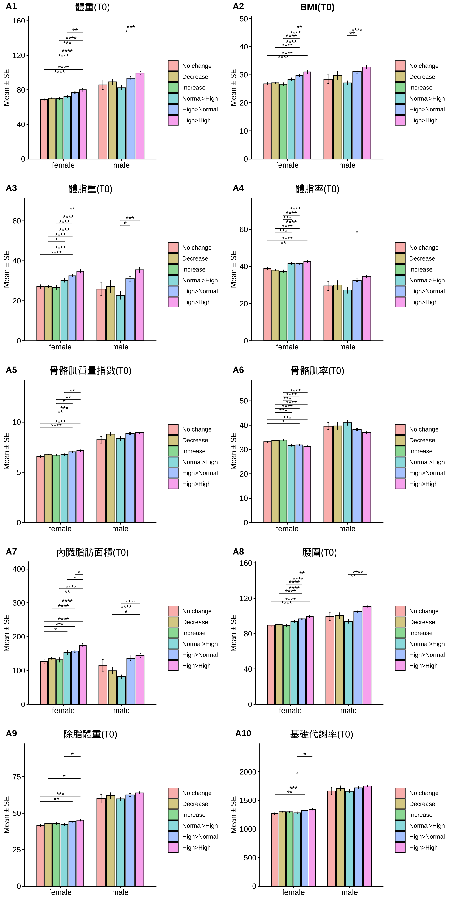
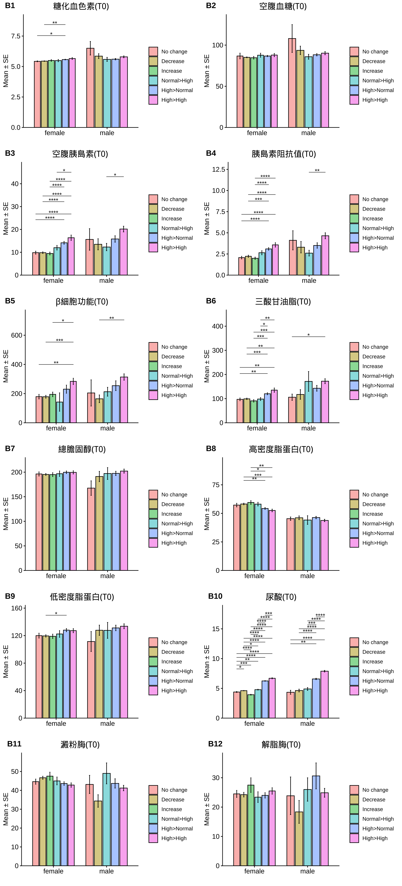
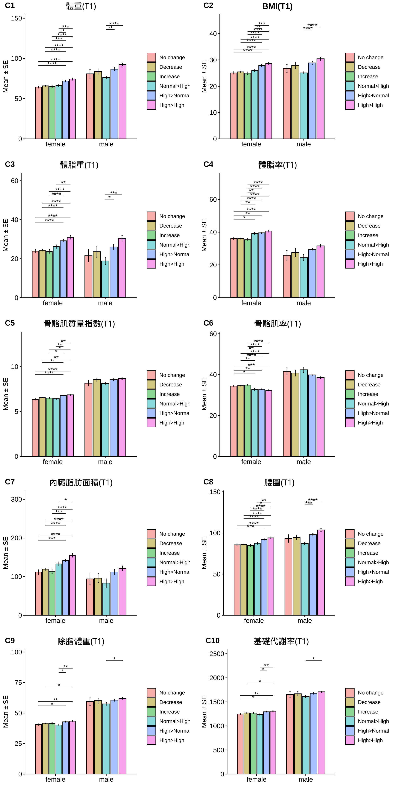
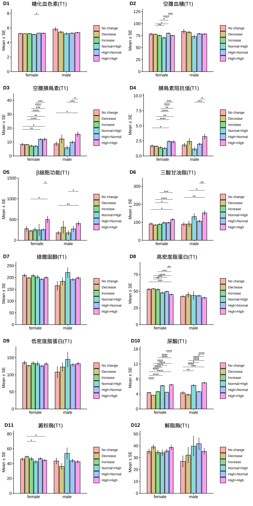
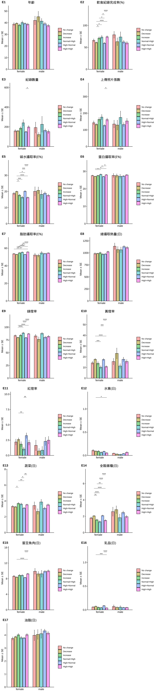
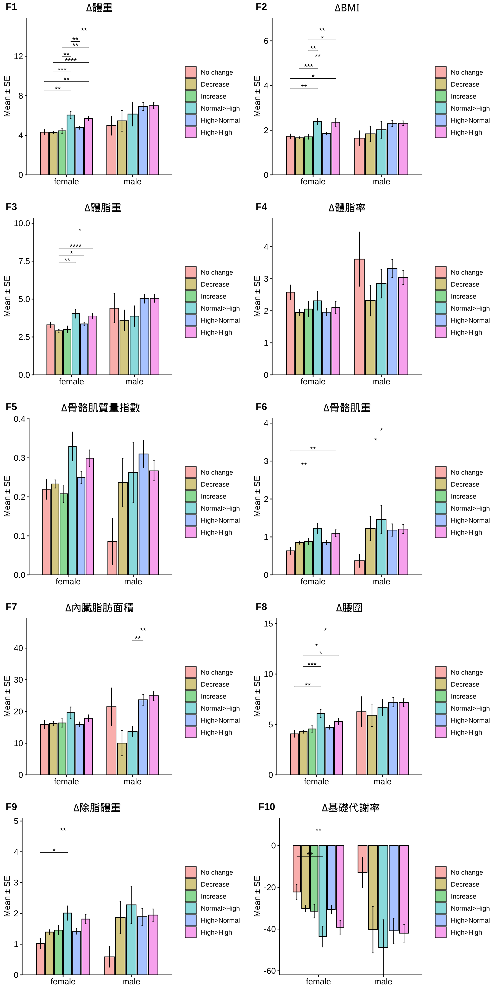
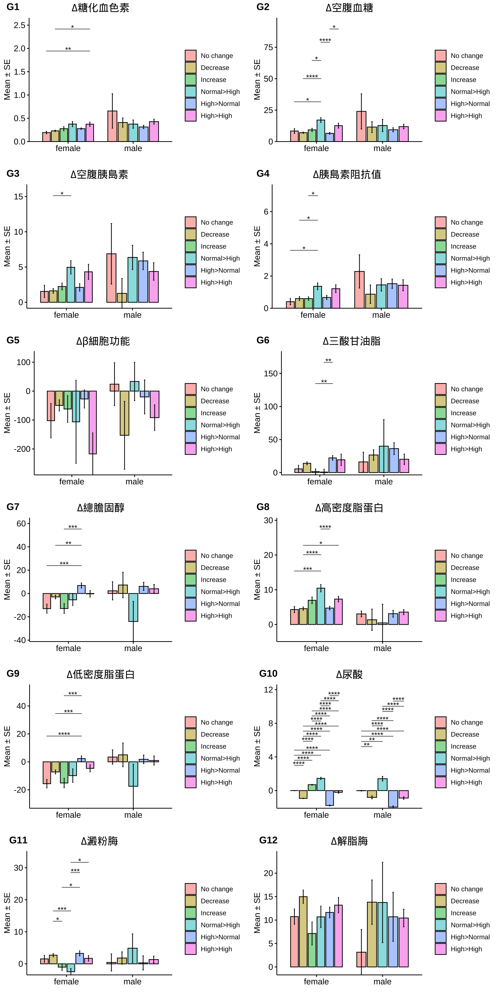
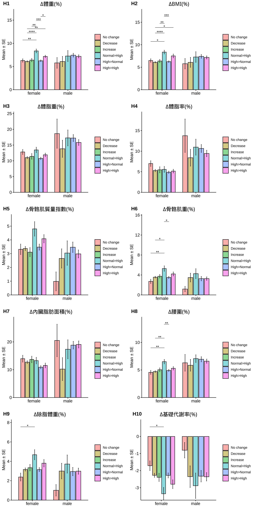
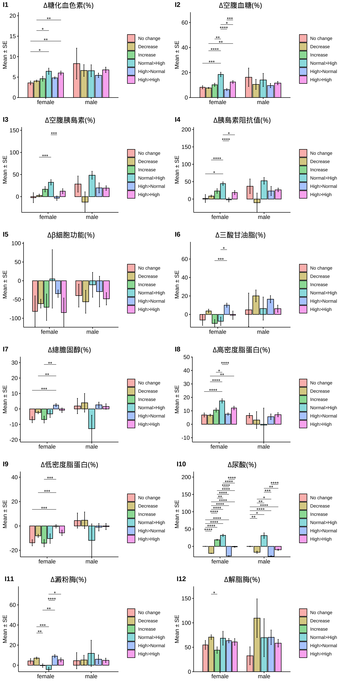
| No change | Decrease | Increase | Normal>High | High>Normal | High>High | No change | Decrease | Increase | Normal>High | High>Normal | High>High | |
|---|---|---|---|---|---|---|---|---|---|---|---|---|
| 體重(T0) | 68.74 ± 1.33 | 70.25 ± 0.62 | 69.73 ± 1.49 | 72.47 ± 1.35 | 76.78 ± 0.94 | 80.02 ± 1.44 | 85.87 ± 5.66 | 89.23 ± 3.29 | 77.33 ± 0.86 | 82.46 ± 2.43 | 93.53 ± 1.94 | 99.47 ± 1.94 |
| BMI(T0) | 26.8 ± 0.45 | 27.15 ± 0.22 | 26.69 ± 0.47 | 28.42 ± 0.48 | 29.76 ± 0.34 | 31 ± 0.51 | 28.45 ± 1.55 | 29.77 ± 1.4 | 27.02 ± 1.82 | 27.12 ± 0.68 | 31.18 ± 0.56 | 32.79 ± 0.59 |
| 體脂重(T0) | 27.14 ± 0.92 | 27.22 ± 0.44 | 26.74 ± 0.99 | 30.27 ± 0.93 | 32.55 ± 0.67 | 34.86 ± 0.98 | 25.93 ± 3.42 | 27.2 ± 3.09 | 25.13 ± 6.08 | 22.69 ± 1.9 | 31.05 ± 1.22 | 35.51 ± 1.4 |
| 體脂率(T0) | 38.81 ± 0.68 | 38.06 ± 0.33 | 37.44 ± 0.69 | 41.48 ± 0.71 | 41.56 ± 0.38 | 42.75 ± 0.52 | 29.49 ± 2.53 | 29.95 ± 2.42 | 32.33 ± 7.43 | 27.3 ± 1.64 | 32.62 ± 0.67 | 34.67 ± 0.69 |
| 骨骼肌質量指數(T0) | 6.58 ± 0.07 | 6.79 ± 0.04 | 6.7 ± 0.09 | 6.77 ± 0.08 | 7.03 ± 0.05 | 7.17 ± 0.08 | 8.24 ± 0.34 | 8.8 ± 0.18 | 7.73 ± 0.47 | 8.38 ± 0.19 | 8.87 ± 0.1 | 8.94 ± 0.08 |
| 骨骼肌率(T0) | 33.15 ± 0.36 | 33.7 ± 0.18 | 33.92 ± 0.36 | 31.74 ± 0.4 | 31.92 ± 0.2 | 31.31 ± 0.28 | 39.6 ± 1.47 | 39.69 ± 1.44 | 37.24 ± 4.24 | 41.03 ± 1.06 | 38.14 ± 0.39 | 36.95 ± 0.39 |
| 內臟脂肪面積(T0) | 126.98 ± 5.1 | 136.19 ± 2.34 | 131.44 ± 5.05 | 153.21 ± 4.99 | 157.33 ± 2.96 | 174.48 ± 4.11 | 115.53 ± 17.18 | 99.3 ± 6.59 | 118.47 ± 33.8 | 82 ± 3.58 | 136.16 ± 6.15 | 144.27 ± 5.24 |
| 腰圍(T0) | 89.65 ± 1.18 | 90.28 ± 0.56 | 89.47 ± 1.26 | 93.58 ± 1.27 | 96.83 ± 0.79 | 99.35 ± 1.16 | 99.53 ± 4.79 | 100.47 ± 3.15 | 91.1 ± 3.98 | 93.96 ± 2.02 | 105.17 ± 1.53 | 110.76 ± 1.6 |
| 除脂體重(T0) | 41.6 ± 0.58 | 43.03 ± 0.27 | 42.99 ± 0.65 | 42.2 ± 0.71 | 44.24 ± 0.36 | 45.16 ± 0.59 | 59.94 ± 3 | 62.03 ± 2.01 | 52.2 ± 5.31 | 59.77 ± 1.35 | 62.49 ± 0.93 | 63.96 ± 0.75 |
| 基礎代謝率(T0) | 1268.67 ± 12.54 | 1299.53 ± 5.8 | 1298.66 ± 13.94 | 1281.73 ± 15.39 | 1325.6 ± 7.74 | 1345.44 ± 12.81 | 1664.86 ± 64.73 | 1709.73 ± 43.45 | 1497.67 ± 114.32 | 1661 ± 29.13 | 1719.73 ± 20.08 | 1751.44 ± 16.1 |
| 糖化血色素(T0) | 5.43 ± 0.04 | 5.44 ± 0.02 | 5.5 ± 0.07 | 5.49 ± 0.09 | 5.57 ± 0.03 | 5.66 ± 0.07 | 6.5 ± 0.56 | 5.85 ± 0.2 | 5.8 ± 0.21 | 5.59 ± 0.16 | 5.6 ± 0.06 | 5.79 ± 0.07 |
| 空腹血糖(T0) | 86.76 ± 3.49 | 85.16 ± 0.53 | 84.67 ± 1.6 | 87.73 ± 2.45 | 86.76 ± 0.77 | 87.92 ± 1.94 | 108 ± 16.91 | 93.64 ± 5.09 | 84.33 ± 1.76 | 85.88 ± 2.95 | 88.27 ± 1.32 | 90.23 ± 1.94 |
| 空腹胰島素(T0) | 9.83 ± 0.66 | 9.82 ± 0.36 | 9.48 ± 0.61 | 12.01 ± 1 | 14.15 ± 0.61 | 16.36 ± 1.18 | 15.63 ± 4.71 | 13.5 ± 2.43 | 13.1 ± 4.59 | 12.3 ± 1.6 | 15.82 ± 1.39 | 20.17 ± 1.25 |
| 胰島素阻抗值(T0) | 2.07 ± 0.15 | 2.23 ± 0.13 | 1.99 ± 0.13 | 2.65 ± 0.24 | 3.1 ± 0.15 | 3.57 ± 0.26 | 4.11 ± 1.13 | 3.3 ± 0.68 | 2.73 ± 1 | 2.6 ± 0.34 | 3.5 ± 0.32 | 4.65 ± 0.35 |
| β細胞功能(T0) | 179.14 ± 15.63 | 178.38 ± 9.77 | 194.84 ± 15.67 | 142.2 ± 63.21 | 230.43 ± 27.84 | 283.82 ± 21.45 | 204.49 ± 89.75 | 164.39 ± 26.25 | 216.8 ± 71.16 | 212.81 ± 30.26 | 254.24 ± 33.37 | 313.68 ± 21.58 |
| 三酸甘油脂(T0) | 97.09 ± 5.54 | 99.17 ± 3 | 90.82 ± 5.06 | 98.35 ± 6.06 | 120.15 ± 4.03 | 135.28 ± 8.86 | 105.86 ± 12.93 | 117.36 ± 19.83 | 122 ± 49.22 | 171.38 ± 40.95 | 142.92 ± 11.9 | 172.27 ± 10.11 |
| 總膽固醇(T0) | 196.36 ± 4.23 | 195.37 ± 1.92 | 195.03 ± 3.87 | 196.84 ± 5.58 | 199.79 ± 2.63 | 199.57 ± 3.29 | 167.57 ± 14.79 | 191.18 ± 10.43 | 168 ± 27.47 | 197.25 ± 12.05 | 197.53 ± 4.3 | 202.21 ± 4.07 |
| 高密度脂蛋白(T0) | 57.25 ± 1.58 | 58.21 ± 0.71 | 59.55 ± 1.6 | 58.1 ± 1.59 | 54.29 ± 0.79 | 52.56 ± 1.17 | 45.36 ± 1.47 | 46.14 ± 1.63 | 54.5 ± 7.19 | 44.16 ± 3.78 | 46.33 ± 1.03 | 43.8 ± 1 |
| 低密度脂蛋白(T0) | 119.99 ± 3.56 | 119.57 ± 1.67 | 119.01 ± 3.16 | 122.41 ± 4.89 | 128 ± 2.3 | 127.24 ± 2.96 | 111.43 ± 14.5 | 127.82 ± 7.43 | 104.67 ± 21.73 | 127.62 ± 11.56 | 131.18 ± 4.01 | 133.62 ± 3.53 |
| 尿酸(T0) | 4.39 ± 0.08 | 4.61 ± 0.03 | 3.94 ± 0.07 | 4.78 ± 0.07 | 6.25 ± 0.05 | 6.69 ± 0.09 | 4.34 ± 0.33 | 4.64 ± 0.23 | 3.83 ± 0.33 | 4.9 ± 0.24 | 6.58 ± 0.11 | 7.88 ± 0.13 |
| 澱粉脢(T0) | 44.62 ± 1.37 | 46.68 ± 0.81 | 47.54 ± 2.11 | 45 ± 2.07 | 43.61 ± 0.94 | 42.82 ± 1.16 | 43.14 ± 4.81 | 34.36 ± 3.31 | 45.67 ± 5.9 | 49 ± 5.55 | 43.68 ± 2.46 | 41.23 ± 1.44 |
| 解脂脢(T0) | 24.5 ± 1.19 | 24.24 ± 0.79 | 27.49 ± 2.49 | 23.39 ± 1.82 | 24 ± 0.92 | 25.5 ± 1.09 | 23.86 ± 6.41 | 18.36 ± 3.89 | 36 ± 24.58 | 26 ± 3.98 | 30.63 ± 4.39 | 24.88 ± 1.5 |
| 體重(T1) | 64.42 ± 1.3 | 65.95 ± 0.59 | 65.28 ± 1.42 | 66.42 ± 1.27 | 72.01 ± 0.91 | 74.32 ± 1.37 | 80.89 ± 5.34 | 83.76 ± 3.12 | 75.9 ± 2.87 | 76.31 ± 1.53 | 86.61 ± 1.87 | 92.47 ± 1.93 |
| BMI(T1) | 25.07 ± 0.45 | 25.49 ± 0.21 | 24.99 ± 0.46 | 26.03 ± 0.44 | 27.91 ± 0.33 | 28.64 ± 0.48 | 26.8 ± 1.47 | 27.93 ± 1.27 | 26.58 ± 2.41 | 25.1 ± 0.4 | 28.89 ± 0.56 | 30.48 ± 0.59 |
| 體脂重(T1) | 23.84 ± 0.9 | 24.31 ± 0.43 | 23.75 ± 0.95 | 26.23 ± 0.86 | 29.19 ± 0.65 | 30.98 ± 0.96 | 21.53 ± 3.2 | 23.6 ± 2.84 | 23.37 ± 7.08 | 18.81 ± 1.72 | 26.02 ± 1.22 | 30.46 ± 1.41 |
| 體脂率(T1) | 36.23 ± 0.75 | 36.11 ± 0.34 | 35.39 ± 0.72 | 39.17 ± 0.73 | 39.61 ± 0.41 | 40.65 ± 0.58 | 25.87 ± 2.93 | 27.64 ± 2.52 | 30.27 ± 8.02 | 24.45 ± 1.88 | 29.3 ± 0.78 | 31.63 ± 0.78 |
| 骨骼肌質量指數(T1) | 6.36 ± 0.08 | 6.55 ± 0.04 | 6.5 ± 0.09 | 6.44 ± 0.08 | 6.78 ± 0.05 | 6.87 ± 0.07 | 8.16 ± 0.31 | 8.56 ± 0.17 | 7.73 ± 0.32 | 8.11 ± 0.15 | 8.55 ± 0.1 | 8.67 ± 0.08 |
| 骨骼肌率(T1) | 34.42 ± 0.4 | 34.62 ± 0.19 | 34.89 ± 0.38 | 32.79 ± 0.41 | 32.86 ± 0.21 | 32.31 ± 0.31 | 41.59 ± 1.73 | 40.81 ± 1.49 | 38.3 ± 4.62 | 42.4 ± 1.27 | 39.88 ± 0.44 | 38.55 ± 0.44 |
| 內臟脂肪面積(T1) | 111.77 ± 5.03 | 119.22 ± 2.26 | 113.63 ± 4.92 | 132.84 ± 4.91 | 141.49 ± 3.05 | 155.02 ± 4.33 | 94.03 ± 15.3 | 95.98 ± 9.88 | 106.6 ± 34.12 | 83.3 ± 9.35 | 111.84 ± 6.06 | 121.38 ± 5.43 |
| 腰圍(T1) | 85.58 ± 1.21 | 86 ± 0.54 | 84.92 ± 1.2 | 87.5 ± 1.25 | 92.11 ± 0.8 | 94.08 ± 1.14 | 93.27 ± 4.66 | 94.55 ± 2.98 | 86.63 ± 3.91 | 87.26 ± 1.5 | 97.97 ± 1.62 | 103.6 ± 1.67 |
| 除脂體重(T1) | 40.57 ± 0.57 | 41.64 ± 0.25 | 41.54 ± 0.62 | 40.19 ± 0.68 | 42.82 ± 0.35 | 43.35 ± 0.54 | 59.36 ± 3.09 | 60.16 ± 2.03 | 52.53 ± 4.6 | 57.5 ± 1.09 | 60.6 ± 0.88 | 62.01 ± 0.72 |
| 基礎代謝率(T1) | 1246.43 ± 12.27 | 1269.39 ± 5.48 | 1267.2 ± 13.45 | 1238.12 ± 14.65 | 1294.96 ± 7.51 | 1306.32 ± 11.61 | 1651.86 ± 66.68 | 1669.45 ± 43.94 | 1504 ± 99.42 | 1612.25 ± 23.45 | 1678.88 ± 19.03 | 1709.48 ± 15.58 |
| 糖化血色素(T1) | 5.23 ± 0.05 | 5.21 ± 0.02 | 5.22 ± 0.04 | 5.11 ± 0.05 | 5.29 ± 0.02 | 5.28 ± 0.04 | 5.84 ± 0.23 | 5.45 ± 0.13 | 5.67 ± 0.03 | 5.21 ± 0.13 | 5.29 ± 0.05 | 5.37 ± 0.04 |
| 空腹血糖(T1) | 78.37 ± 2.06 | 78.1 ± 0.44 | 75.37 ± 1.32 | 70.61 ± 1.78 | 80.2 ± 0.5 | 75.27 ± 0.95 | 84 ± 4.28 | 82.09 ± 2.16 | 81.67 ± 5.84 | 73.12 ± 3.53 | 78.88 ± 1.04 | 78.32 ± 1.08 |
| 空腹胰島素(T1) | 8.34 ± 0.79 | 8.22 ± 0.29 | 7.23 ± 0.65 | 7.04 ± 0.74 | 11.98 ± 0.56 | 12.04 ± 0.93 | 8.75 ± 1.37 | 12.23 ± 2.82 | 16.52 ± 8.44 | 5.93 ± 1.24 | 9.95 ± 0.79 | 15.67 ± 1.57 |
| 胰島素阻抗值(T1) | 1.68 ± 0.19 | 1.63 ± 0.06 | 1.4 ± 0.14 | 1.28 ± 0.15 | 2.42 ± 0.12 | 2.36 ± 0.2 | 1.83 ± 0.29 | 2.43 ± 0.49 | 3.47 ± 1.87 | 1.15 ± 0.28 | 1.98 ± 0.17 | 3.22 ± 0.39 |
| β細胞功能(T1) | 279.83 ± 56.5 | 228.21 ± 17.88 | 258.04 ± 46.91 | 250.15 ± 133.58 | 257.62 ± 19.14 | 501.03 ± 76.49 | 180.46 ± 33.64 | 317.21 ± 140.49 | 342.07 ± 114.88 | 179.44 ± 49.97 | 274.37 ± 61.5 | 405.46 ± 46.64 |
| 三酸甘油脂(T1) | 91.55 ± 5.13 | 85.13 ± 2.15 | 89.25 ± 3.25 | 97.57 ± 4.55 | 97.96 ± 3.51 | 115.94 ± 5.38 | 89.71 ± 9.91 | 90.73 ± 15.11 | 105 ± 15.04 | 131.38 ± 16.72 | 106.67 ± 5.74 | 152.12 ± 11.41 |
| 總膽固醇(T1) | 209.36 ± 5.6 | 198.33 ± 2.14 | 207.91 ± 5.64 | 202.27 ± 6.74 | 192.92 ± 2.7 | 199.84 ± 3.83 | 165.29 ± 17.58 | 183.91 ± 14.9 | 193.67 ± 20.54 | 221.25 ± 20.39 | 191.42 ± 4.76 | 198.17 ± 5.05 |
| 高密度脂蛋白(T1) | 52.95 ± 1.57 | 53.65 ± 0.65 | 52.59 ± 1.4 | 47.64 ± 1.37 | 49.57 ± 0.68 | 45.25 ± 0.92 | 42.31 ± 0.99 | 44.77 ± 3.55 | 51.3 ± 3.35 | 43.7 ± 5.51 | 43.23 ± 1.06 | 40.23 ± 0.98 |
| 低密度脂蛋白(T1) | 135.64 ± 4.72 | 126.82 ± 1.86 | 134.17 ± 4.33 | 132.29 ± 5.85 | 125.67 ± 2.29 | 131.91 ± 3.37 | 108 ± 15.7 | 122.82 ± 11.92 | 129.33 ± 11.46 | 145.12 ± 21.45 | 129.38 ± 3.82 | 132.67 ± 4.2 |
| 尿酸(T1) | 4.39 ± 0.09 | 3.68 ± 0.04 | 4.64 ± 0.07 | 6.23 ± 0.11 | 4.47 ± 0.04 | 6.48 ± 0.08 | 4.33 ± 0.32 | 3.83 ± 0.22 | 4.2 ± 0.31 | 6.31 ± 0.19 | 4.62 ± 0.08 | 7 ± 0.13 |
| 澱粉脢(T1) | 46.16 ± 1.67 | 49.38 ± 0.89 | 46.51 ± 1.89 | 42.53 ± 1.94 | 46.87 ± 1.12 | 44.53 ± 1.31 | 43.57 ± 3.68 | 36.18 ± 3.97 | 38.33 ± 4.84 | 53.88 ± 7.18 | 43.98 ± 2.16 | 42.57 ± 1.62 |
| 解脂脢(T1) | 35.24 ± 1.95 | 39.13 ± 1.87 | 34.64 ± 1.82 | 34.08 ± 2.54 | 35.62 ± 1.4 | 38.68 ± 2 | 27 ± 4.55 | 32.18 ± 6.46 | 15 ± 3.27 | 39.75 ± 8.24 | 41.78 ± 4.84 | 35.31 ± 2.43 |
| 年齡 | 38.83 ± 1.29 | 39.56 ± 0.53 | 38.08 ± 0.97 | 40.18 ± 1.44 | 39.36 ± 0.69 | 38.71 ± 0.99 | 42 ± 3.57 | 45.18 ± 4.57 | 44.67 ± 17.52 | 41.38 ± 2.24 | 39.1 ± 1.34 | 37.52 ± 1.1 |
| 飲食紀錄完成率(%) | 66 ± 3.35 | 61.07 ± 1.58 | 71.17 ± 2.89 | 73.53 ± 3.86 | 59.62 ± 1.98 | 74.15 ± 2.24 | 78.7 ± 7.6 | 63 ± 8.77 | 34.5 ± 13.6 | 73.68 ± 11.61 | 62.34 ± 3.6 | 59.91 ± 3.35 |
| 紀錄數量 | 158.86 ± 13.37 | 158.95 ± 6.55 | 186.74 ± 14.4 | 241.25 ± 31.76 | 150.12 ± 7.7 | 198.78 ± 13.45 | 192.71 ± 55.42 | 121.18 ± 21.42 | 58.67 ± 29.58 | 226.12 ± 80.43 | 163.63 ± 16.38 | 151.34 ± 18.17 |
| 上傳照片張數 | 142.99 ± 11.21 | 132.85 ± 5.44 | 163.1 ± 11.45 | 176.84 ± 15.83 | 126.31 ± 6.24 | 161.55 ± 9.05 | 135.14 ± 22.49 | 129 ± 29.13 | 128.33 ± 105.35 | 174.62 ± 38.25 | 131.73 ± 11.73 | 153.44 ± 15.54 |
| 碳水攝取率(E%) | 18.76 ± 0.81 | 19.97 ± 0.37 | 17.72 ± 0.6 | 16.34 ± 0.75 | 20.14 ± 0.45 | 16.25 ± 0.48 | 20.07 ± 2.78 | 20.69 ± 2.05 | 25.99 ± 3.17 | 18.19 ± 2.61 | 18.91 ± 0.89 | 17.56 ± 0.74 |
| 蛋白攝取率(E%) | 27.59 ± 0.31 | 27.13 ± 0.15 | 27.59 ± 0.29 | 28.26 ± 0.35 | 27.01 ± 0.2 | 28.02 ± 0.22 | 27.67 ± 1.08 | 27.58 ± 0.95 | 25.68 ± 0.95 | 27.21 ± 1.11 | 27.29 ± 0.37 | 27.95 ± 0.31 |
| 脂肪攝取率(E%) | 53.64 ± 0.61 | 52.91 ± 0.28 | 54.69 ± 0.45 | 55.41 ± 0.55 | 52.85 ± 0.32 | 55.73 ± 0.37 | 52.26 ± 2.01 | 51.74 ± 1.66 | 48.34 ± 2.41 | 54.6 ± 1.66 | 53.8 ± 0.66 | 54.49 ± 0.54 |
| 總攝取熱量(日) | 985.1 ± 19 | 987.85 ± 8.41 | 1001.6 ± 18.63 | 972.47 ± 17.98 | 976.61 ± 10.18 | 1024.3 ± 13.59 | 1138.05 ± 65.77 | 1068.15 ± 63.28 | 979.79 ± 70.04 | 1064.76 ± 57.61 | 1129.92 ± 22.63 | 1108.97 ± 24.68 |
| 綠燈率 | 83.54 ± 1.63 | 79.79 ± 0.89 | 84.25 ± 1.73 | 88.67 ± 1.61 | 79.35 ± 1.03 | 87.09 ± 1 | 82.8 ± 3.03 | 76.13 ± 4.9 | 76.55 ± 13.61 | 87.73 ± 2.24 | 80.07 ± 2.21 | 81.94 ± 1.95 |
| 黃燈率 | 14.27 ± 1.36 | 17.61 ± 0.82 | 13.9 ± 1.56 | 10.28 ± 1.41 | 17.41 ± 0.91 | 10.81 ± 0.84 | 15.57 ± 2.88 | 23.14 ± 4.98 | 21.39 ± 11.86 | 11.42 ± 2.13 | 17.63 ± 1.93 | 15.57 ± 1.7 |
| 紅燈率 | 2.2 ± 0.47 | 2.6 ± 0.27 | 1.85 ± 0.41 | 1.04 ± 0.31 | 3.23 ± 0.44 | 2.1 ± 0.41 | 1.64 ± 0.85 | 0.73 ± 0.41 | 2.06 ± 1.76 | 0.85 ± 0.6 | 2.3 ± 0.66 | 2.49 ± 0.6 |
| 水果(日) | 0.11 ± 0.02 | 0.09 ± 0.01 | 0.09 ± 0.02 | 0.07 ± 0.02 | 0.09 ± 0.01 | 0.05 ± 0.01 | 0.05 ± 0.01 | 0.03 ± 0.01 | 0.06 ± 0.06 | 0.02 ± 0.01 | 0.04 ± 0.01 | 0.07 ± 0.02 |
| 蔬菜(日) | 3.31 ± 0.12 | 3.26 ± 0.06 | 3.69 ± 0.13 | 3.6 ± 0.14 | 3.1 ± 0.07 | 3.53 ± 0.09 | 3.42 ± 0.46 | 2.67 ± 0.34 | 3.32 ± 2 | 3.87 ± 0.32 | 3.07 ± 0.15 | 3.5 ± 0.12 |
| 全穀雜糧(日) | 1.8 ± 0.13 | 2.05 ± 0.07 | 1.57 ± 0.1 | 1.34 ± 0.12 | 2.08 ± 0.08 | 1.5 ± 0.09 | 2.57 ± 0.54 | 2.81 ± 0.46 | 2.91 ± 0.81 | 1.83 ± 0.43 | 2.45 ± 0.19 | 1.95 ± 0.14 |
| 蛋豆魚肉(日) | 8.65 ± 0.22 | 8.4 ± 0.09 | 8.87 ± 0.22 | 8.86 ± 0.21 | 8.28 ± 0.12 | 9.26 ± 0.15 | 9.9 ± 0.74 | 9.23 ± 0.61 | 7.58 ± 0.98 | 9.27 ± 0.86 | 9.84 ± 0.29 | 9.98 ± 0.28 |
| 乳品(日) | 0.06 ± 0.01 | 0.08 ± 0.01 | 0.05 ± 0.01 | 0.05 ± 0.01 | 0.09 ± 0.01 | 0.04 ± 0 | 0.07 ± 0.03 | 0.05 ± 0.02 | 0.13 ± 0.13 | 0.06 ± 0.03 | 0.05 ± 0.01 | 0.05 ± 0.01 |
| 油脂(日) | 3.74 ± 0.12 | 3.87 ± 0.06 | 4.02 ± 0.1 | 3.79 ± 0.11 | 3.77 ± 0.06 | 4.03 ± 0.09 | 3.98 ± 0.4 | 4.05 ± 0.37 | 3.41 ± 0.14 | 4.11 ± 0.35 | 4.32 ± 0.13 | 4.15 ± 0.12 |
| ∆體重 | 4.32 ± 0.26 | 4.3 ± 0.11 | 4.45 ± 0.27 | 6.05 ± 0.34 | 4.77 ± 0.15 | 5.7 ± 0.23 | 4.99 ± 0.96 | 5.46 ± 1.04 | 1.43 ± 2.01 | 6.15 ± 1.21 | 6.92 ± 0.39 | 7 ± 0.31 |
| ∆BMI | 1.73 ± 0.1 | 1.66 ± 0.04 | 1.7 ± 0.1 | 2.39 ± 0.14 | 1.85 ± 0.06 | 2.36 ± 0.18 | 1.65 ± 0.32 | 1.84 ± 0.35 | 0.45 ± 0.72 | 2.02 ± 0.38 | 2.29 ± 0.13 | 2.31 ± 0.1 |
| ∆體脂重 | 3.3 ± 0.19 | 2.91 ± 0.09 | 3 ± 0.23 | 4.04 ± 0.29 | 3.36 ± 0.12 | 3.88 ± 0.17 | 4.4 ± 0.96 | 3.6 ± 0.68 | 1.77 ± 1.24 | 3.88 ± 0.67 | 5.03 ± 0.3 | 5.05 ± 0.26 |
| ∆體脂率 | 2.58 ± 0.22 | 1.95 ± 0.1 | 2.06 ± 0.23 | 2.31 ± 0.29 | 1.96 ± 0.11 | 2.1 ± 0.19 | 3.61 ± 0.85 | 2.32 ± 0.48 | 2.07 ± 0.88 | 2.85 ± 0.45 | 3.32 ± 0.29 | 3.04 ± 0.23 |
| ∆骨骼肌質量指數 | 0.22 ± 0.03 | 0.23 ± 0.01 | 0.21 ± 0.02 | 0.33 ± 0.04 | 0.25 ± 0.02 | 0.3 ± 0.02 | 0.09 ± 0.06 | 0.24 ± 0.06 | 0 ± 0.15 | 0.26 ± 0.08 | 0.31 ± 0.03 | 0.27 ± 0.03 |
| ∆骨骼肌重 | 0.63 ± 0.09 | 0.85 ± 0.04 | 0.88 ± 0.09 | 1.23 ± 0.13 | 0.86 ± 0.05 | 1.1 ± 0.09 | 0.37 ± 0.17 | 1.23 ± 0.32 | -0.1 ± 0.36 | 1.46 ± 0.37 | 1.18 ± 0.16 | 1.21 ± 0.12 |
| ∆內臟脂肪面積 | 15.94 ± 1.03 | 16.2 ± 0.49 | 16.39 ± 1.03 | 19.63 ± 1.55 | 15.93 ± 0.66 | 17.85 ± 0.93 | 21.5 ± 5.91 | 10.04 ± 2.71 | 11.87 ± 2.2 | 13.73 ± 1.14 | 23.68 ± 1.53 | 24.97 ± 1.23 |
| ∆腰圍 | 4.07 ± 0.33 | 4.29 ± 0.15 | 4.56 ± 0.31 | 6.08 ± 0.38 | 4.72 ± 0.18 | 5.27 ± 0.31 | 6.26 ± 1.49 | 5.92 ± 1.11 | 4.47 ± 0.93 | 6.7 ± 0.81 | 7.2 ± 0.46 | 7.16 ± 0.39 |
| ∆除脂體重 | 1.03 ± 0.16 | 1.39 ± 0.07 | 1.46 ± 0.15 | 2.01 ± 0.23 | 1.42 ± 0.09 | 1.81 ± 0.15 | 0.59 ± 0.33 | 1.86 ± 0.52 | -0.33 ± 0.8 | 2.28 ± 0.61 | 1.89 ± 0.28 | 1.94 ± 0.2 |
| ∆基礎代謝率 | -22.24 ± 3.51 | -30.13 ± 1.6 | -31.46 ± 3.2 | -43.61 ± 4.98 | -30.64 ± 1.97 | -39.12 ± 3.29 | -13 ± 7.2 | -40.27 ± 11.13 | 6.33 ± 16.59 | -48.75 ± 13.2 | -40.85 ± 5.98 | -41.96 ± 4.25 |
| ∆糖化血色素 | 0.19 ± 0.03 | 0.23 ± 0.01 | 0.28 ± 0.04 | 0.38 ± 0.06 | 0.28 ± 0.02 | 0.37 ± 0.04 | 0.66 ± 0.37 | 0.41 ± 0.1 | 0.13 ± 0.23 | 0.37 ± 0.09 | 0.31 ± 0.03 | 0.43 ± 0.05 |
| ∆空腹血糖 | 8.39 ± 1.92 | 7.06 ± 0.51 | 9.3 ± 1.29 | 17.12 ± 1.93 | 6.56 ± 0.74 | 12.65 ± 1.95 | 24 ± 13.99 | 11.55 ± 4.32 | 2.67 ± 4.18 | 12.75 ± 4.86 | 9.38 ± 1.58 | 11.91 ± 1.78 |
| ∆空腹胰島素 | 1.55 ± 0.87 | 1.63 ± 0.33 | 2.25 ± 0.49 | 4.97 ± 0.95 | 2.12 ± 0.53 | 4.32 ± 1.07 | 6.88 ± 4.29 | 1.27 ± 2.11 | -3.42 ± 4.31 | 6.37 ± 1.71 | 5.87 ± 1.23 | 4.37 ± 1.23 |
| ∆胰島素阻抗值 | 0.41 ± 0.19 | 0.6 ± 0.12 | 0.6 ± 0.11 | 1.36 ± 0.21 | 0.67 ± 0.12 | 1.21 ± 0.24 | 2.29 ± 1.03 | 0.87 ± 0.57 | -0.73 ± 0.96 | 1.45 ± 0.38 | 1.52 ± 0.29 | 1.43 ± 0.34 |
| ∆β細胞功能 | -102.36 ± 58.27 | -49.55 ± 19.43 | -61.98 ± 45.83 | -106.33 ± 142.43 | -27.19 ± 31.3 | -217.21 ± 72.65 | 24.03 ± 73.94 | -152.82 ± 117.38 | -125.27 ± 96.51 | 33.37 ± 66.06 | -20.13 ± 58.68 | -91.78 ± 44.01 |
| ∆三酸甘油脂 | 5.54 ± 5.51 | 14.04 ± 2.18 | 1.57 ± 3.98 | 0.78 ± 4.31 | 22.19 ± 3.57 | 19.34 ± 8.67 | 16.14 ± 14.75 | 26.64 ± 7.92 | 17 ± 51.07 | 40 ± 40.25 | 36.25 ± 8.95 | 20.15 ± 7.79 |
| ∆總膽固醇 | -13 ± 3.87 | -2.95 ± 1.61 | -12.88 ± 4.23 | -5.43 ± 4.88 | 6.87 ± 2.18 | -0.27 ± 2.8 | 2.29 ± 7.79 | 7.27 ± 10.94 | -25.67 ± 18.1 | -24 ± 17.22 | 6.12 ± 3.47 | 4.04 ± 3.68 |
| ∆高密度脂蛋白 | 4.3 ± 0.9 | 4.57 ± 0.46 | 6.96 ± 0.96 | 10.46 ± 1.06 | 4.72 ± 0.5 | 7.31 ± 0.79 | 3.04 ± 0.84 | 1.36 ± 3.08 | 3.2 ± 3.92 | 0.46 ± 5.38 | 3.1 ± 0.97 | 3.57 ± 0.7 |
| ∆低密度脂蛋白 | -15.66 ± 3.06 | -7.25 ± 1.42 | -15.16 ± 3.38 | -9.88 ± 4.88 | 2.34 ± 1.91 | -4.67 ± 2.51 | 3.43 ± 5.11 | 5 ± 8.51 | -24.67 ± 16.42 | -17.5 ± 15.74 | 1.8 ± 3.04 | 0.96 ± 3.19 |
| ∆尿酸 | 0 ± 0.01 | -0.93 ± 0.03 | 0.7 ± 0.05 | 1.45 ± 0.13 | -1.77 ± 0.06 | -0.21 ± 0.11 | -0.01 ± 0.03 | -0.81 ± 0.17 | 0.37 ± 0.03 | 1.41 ± 0.27 | -1.96 ± 0.14 | -0.89 ± 0.15 |
| ∆澱粉脢 | 1.54 ± 1.1 | 2.7 ± 0.5 | -1.03 ± 1.02 | -2.47 ± 0.99 | 3.26 ± 0.78 | 1.72 ± 0.87 | 0.43 ± 2.66 | 1.82 ± 1.92 | -7.33 ± 6.36 | 4.88 ± 4.48 | 0.3 ± 2.2 | 1.34 ± 1.05 |
| ∆解脂脢 | 10.74 ± 1.63 | 14.99 ± 1.41 | 7.15 ± 2.47 | 10.69 ± 2.29 | 11.62 ± 1.14 | 13.18 ± 1.63 | 3.14 ± 4.84 | 13.82 ± 4.73 | -35 ± 25.31 | 13.75 ± 8.56 | 10.69 ± 5.19 | 10.44 ± 1.88 |
| ∆體重(%) | 6.3 ± 0.36 | 6.1 ± 0.15 | 6.39 ± 0.36 | 8.36 ± 0.41 | 6.24 ± 0.19 | 7.18 ± 0.25 | 5.78 ± 1.14 | 6.08 ± 1.1 | 1.91 ± 2.61 | 7.26 ± 1.18 | 7.44 ± 0.4 | 7.19 ± 0.33 |
| ∆BMI(%) | 6.5 ± 0.38 | 6.1 ± 0.15 | 6.39 ± 0.36 | 8.36 ± 0.41 | 6.24 ± 0.19 | 7.51 ± 0.42 | 5.78 ± 1.14 | 6.09 ± 1.1 | 1.92 ± 2.61 | 7.27 ± 1.17 | 7.41 ± 0.41 | 7.18 ± 0.33 |
| ∆體脂重(%) | 12.82 ± 0.79 | 11.02 ± 0.35 | 11.41 ± 0.9 | 13.46 ± 0.86 | 10.77 ± 0.38 | 11.91 ± 0.55 | 18.64 ± 4.63 | 13.83 ± 2.72 | 9.3 ± 5.7 | 17.28 ± 2.51 | 17.23 ± 1.09 | 15.82 ± 0.91 |
| ∆體脂率(%) | 6.99 ± 0.69 | 5.3 ± 0.29 | 5.47 ± 0.74 | 5.58 ± 0.71 | 4.88 ± 0.29 | 5.16 ± 0.45 | 13.76 ± 4.05 | 8.41 ± 2.03 | 7.63 ± 3.45 | 10.98 ± 1.94 | 10.66 ± 0.95 | 9.44 ± 0.77 |
| ∆骨骼肌質量指數(%) | 3.32 ± 0.38 | 3.37 ± 0.15 | 3.11 ± 0.33 | 4.8 ± 0.53 | 3.48 ± 0.22 | 4.08 ± 0.3 | 0.99 ± 0.69 | 2.65 ± 0.7 | -0.26 ± 2.1 | 3.04 ± 0.89 | 3.47 ± 0.38 | 2.98 ± 0.29 |
| ∆骨骼肌重(%) | 2.72 ± 0.43 | 3.56 ± 0.18 | 3.74 ± 0.36 | 5.28 ± 0.54 | 3.5 ± 0.22 | 4.21 ± 0.4 | 1.18 ± 0.52 | 3.48 ± 0.87 | -0.62 ± 1.46 | 4.26 ± 0.99 | 3.27 ± 0.44 | 3.27 ± 0.34 |
| ∆內臟脂肪面積(%) | 13.97 ± 1.01 | 12.72 ± 0.4 | 13.7 ± 0.93 | 13.28 ± 1.02 | 10.91 ± 0.48 | 11.53 ± 0.73 | 20.52 ± 5.83 | 10.23 ± 2.77 | 11.49 ± 3.35 | 17.36 ± 2.4 | 18.83 ± 1.24 | 19.09 ± 1.02 |
| ∆腰圍(%) | 4.57 ± 0.36 | 4.71 ± 0.16 | 5.04 ± 0.35 | 6.51 ± 0.4 | 4.92 ± 0.18 | 5.3 ± 0.31 | 6.3 ± 1.51 | 5.85 ± 1.06 | 4.9 ± 1.04 | 7.06 ± 0.69 | 6.94 ± 0.46 | 6.6 ± 0.36 |
| ∆除脂體重(%) | 2.38 ± 0.41 | 3.16 ± 0.17 | 3.34 ± 0.33 | 4.68 ± 0.52 | 3.15 ± 0.21 | 3.81 ± 0.38 | 1.01 ± 0.59 | 3 ± 0.8 | -0.97 ± 1.8 | 3.72 ± 0.93 | 2.95 ± 0.42 | 2.99 ± 0.31 |
| ∆基礎代謝率(%) | -1.71 ± 0.28 | -2.27 ± 0.12 | -2.39 ± 0.24 | -3.35 ± 0.37 | -2.28 ± 0.15 | -2.79 ± 0.26 | -0.8 ± 0.45 | -2.35 ± 0.63 | 0.6 ± 1.24 | -2.88 ± 0.74 | -2.32 ± 0.33 | -2.36 ± 0.24 |
| ∆糖化血色素(%) | 3.58 ± 0.46 | 4.04 ± 0.23 | 4.61 ± 0.59 | 6.43 ± 0.75 | 4.81 ± 0.26 | 6.01 ± 0.48 | 8.3 ± 3.77 | 6.62 ± 1.42 | 2.01 ± 4.03 | 6.56 ± 1.44 | 5.43 ± 0.54 | 6.77 ± 0.65 |
| ∆空腹血糖(%) | 8.21 ± 1.26 | 7.69 ± 0.5 | 10.2 ± 1.27 | 18.47 ± 1.77 | 6.34 ± 0.83 | 12.43 ± 1.15 | 16.22 ± 7.35 | 10.53 ± 3.99 | 3.36 ± 5.12 | 14.06 ± 5.24 | 9.58 ± 1.67 | 11.56 ± 1.3 |
| ∆空腹胰島素(%) | -2.36 ± 11.13 | 2.75 ± 3.04 | 16.76 ± 6.03 | 32.48 ± 6.13 | -3.43 ± 5.08 | 12.42 ± 5.62 | 28.47 ± 18.13 | -12.35 ± 23.21 | -17.84 ± 23.6 | 48.44 ± 8.92 | 19.85 ± 11.34 | 19.36 ± 5.1 |
| ∆胰島素阻抗值(%) | 1.63 ± 11.25 | 8.56 ± 3.01 | 23.26 ± 6.63 | 44.39 ± 5.11 | -2.22 ± 6.03 | 18.8 ± 5.97 | 36.86 ± 20.88 | -10.51 ± 27.76 | -16.06 ± 23.53 | 52.6 ± 9.47 | 23.26 ± 13.08 | 26.46 ± 5.11 |
| ∆β細胞功能(%) | -81.62 ± 40.54 | -61.11 ± 11.78 | -70.6 ± 34.91 | 4.96 ± 77.21 | -34.41 ± 9.91 | -84.92 ± 38.96 | -39.63 ± 30.48 | -56.03 ± 30.49 | -79.24 ± 76.68 | -10.75 ± 33.02 | -28.86 ± 40.73 | -48.1 ± 16.35 |
| ∆三酸甘油脂(%) | -6.07 ± 5.82 | 3.73 ± 1.98 | -9.72 ± 4.13 | -7.41 ± 4.56 | 10.03 ± 2.2 | -0.86 ± 4.52 | 4.97 ± 18.16 | 20.09 ± 6.38 | -10.95 ± 34.07 | 6.36 ± 12.47 | 16.49 ± 3.86 | 6.23 ± 3.8 |
| ∆總膽固醇(%) | -6.99 ± 1.96 | -2.31 ± 0.83 | -6.89 ± 2.21 | -3.23 ± 2.37 | 2.48 ± 0.99 | -0.86 ± 1.5 | 1.89 ± 4.95 | 3.96 ± 6.01 | -18.15 ± 11.12 | -12.78 ± 8.67 | 2.63 ± 1.76 | 1.57 ± 1.76 |
| ∆高密度脂蛋白(%) | 6.91 ± 1.53 | 6.73 ± 0.79 | 10.56 ± 1.48 | 17.39 ± 1.6 | 7.57 ± 0.87 | 12.1 ± 1.34 | 6.49 ± 1.69 | 3.14 ± 6.23 | 3.97 ± 7.41 | -0.6 ± 12.63 | 5.6 ± 2.05 | 7.12 ± 1.53 |
| ∆低密度脂蛋白(%) | -13.82 ± 2.54 | -8.15 ± 1.26 | -14.16 ± 2.96 | -10.38 ± 3.93 | -0.32 ± 1.39 | -5.7 ± 2.27 | 4.41 ± 6.19 | 4.67 ± 6.78 | -31.02 ± 18.59 | -11.86 ± 13.53 | -1.05 ± 3.05 | -0.52 ± 2.5 |
| ∆尿酸(%) | -0.02 ± 0.33 | -20.18 ± 0.53 | 18.93 ± 1.51 | 31.92 ± 3.25 | -27.65 ± 0.8 | -1.31 ± 1.6 | -0.21 ± 0.83 | -16.98 ± 3.12 | 9.83 ± 1.6 | 31.15 ± 7.84 | -28.73 ± 1.59 | -9.77 ± 1.82 |
| ∆澱粉脢(%) | 4.25 ± 2.41 | 7.09 ± 1.03 | -0.38 ± 1.77 | -4.24 ± 2.22 | 9.03 ± 1.56 | 5.38 ± 1.98 | 4.5 ± 8.02 | 5.22 ± 4.64 | -13.91 ± 11.97 | 11.81 ± 12.98 | 5.94 ± 4.31 | 4.88 ± 2.11 |
| ∆解脂脢(%) | 54.79 ± 9.18 | 70.77 ± 4.79 | 44.2 ± 6.68 | 68.55 ± 14.23 | 63.55 ± 4.57 | 60.95 ± 7.02 | 32.56 ± 18.29 | 109.58 ± 39.41 | -52.16 ± 20.81 | 69.67 ± 38.8 | 70.39 ± 14.75 | 58.39 ± 7.78 |
|
Significance: |